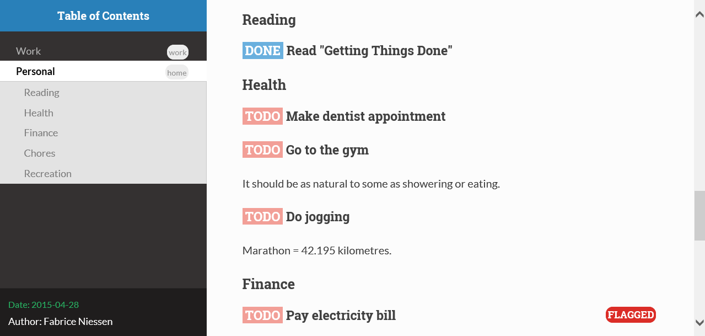

Org ad hoc code, quick hacks and workarounds
Table of Contents
- Hacking Org: Working within Org-mode
- Org Agenda
- Building and Managing Org
- Structure Movement and Editing
- Go back to the previous top-level heading
- Go to a child of the current heading
- Go to a heading by its ID (
CUSTOM_IDproperty) - Show next/prev heading tidily
- Promote all items in subtree
- Turn a heading into an Org link
- Using M-up and M-down to transpose paragraphs
- Changelog support for org headers
- Different org-cycle-level behavior
- Count words in an Org buffer
- Check for misplaced SCHEDULED and DEADLINE cookies
- Sorting list by checkbox type
- Adding Licenses to org files
- Org Table
- Capture and Remember
- Handling Links
- Archiving Content in Org-Mode
- Using and Managing Org-Metadata
- Org Agenda and Task Management
- Make it easier to set org-agenda-files from multiple directories
- Restrict org-agenda-files by filetag
- Highlight the agenda line under cursor
- Split frame horizontally for agenda
- Automatically add an appointment when clocking in a task
- Using external programs for appointments reminders
- Remove from agenda time grid lines that are in an appointment
- Disable version control for Org mode agenda files
- Easy customization of TODO colors
- Add an effort estimate on the fly when clocking in
- Use idle timer for automatic agenda views
- Refresh the agenda view regularly
- Reschedule agenda items to today with a single command
- Mark subtree DONE along with all subheadings
- Mark heading done when all checkboxes are checked.
- Links to custom agenda views
- Exporting org files
- Babel
- Hacking Org: Working with Org-mode and other Emacs Packages
- How to ediff folded Org files
- org-remember-anything
- Org-mode and saveplace.el
- Using ido-mode for org-refile (and archiving via refile)
- Using ido-completing-read to find attachments
- Link to Gnus messages by Message-Id
- Store link to a message when sending in Gnus
- Link to visit a file and run occur
- Send html messages and attachments with Wanderlust
- Add sunrise/sunset times to the agenda.
- Add lunar phases to the agenda.
- Export BBDB contacts to org-contacts.el
- Calculating date differences - how to write a simple elisp function
- ibuffer and org files
- Enable org-mode links in other modes
- poporg.el: edit comments in org-mode
- Convert a .csv file to an Org-mode table
- Don’t let visual-line-mode shadow org special commands
- foldout.el
- Integrate Org Capture with YASnippet and Yankpad
- Slack messages as TODOs in your Org Agenda
- Hacking Org: Working with Org-mode and External Programs
- Use Org-mode with Screen [Andrew Hyatt]
- Org Agenda + Appt + Zenity
- Org and appointment notifications on Mac OS 10.8
- Org-Mode + gnome-osd
- txt2org convert text data to org-mode tables
- remind2org
- Useful webjumps for conkeror
- Use MathJax for HTML export without requiring JavaScript
- Use checkboxes and progress cookies in HTML generated from Org
- Search Org files using lgrep
- Automatic screenshot insertion
- Capture invitations/appointments from MS Exchange emails
- Audio/video file playback within org mode
- Under X11 Keep a window with the current agenda items at all time
- Script (thru procmail) to output emails to an Org file
- Save File With Different Format for Headings (fileconversion)
- Meaningful diff for org files in a git repository
- Opening devonthink links
- Memacs - Org-mode collecting meta-data from the disk and cloud
- Displaying Vega and Vega lite graphs with org
- Emacs as an Org capture server
- Musings
This page is for ad hoc bits of code. Feel free to add quick hacks and workaround. Go crazy.
Hacking Org: Working within Org-mode
Org Agenda
Colorize clocking tasks with a block
Show Org Agenda tasks with heigh spacing based on clock time with org-agenda-log-mode.
Here is original author’s post https://emacs-china.org/t/org-agenda/8679.
Here is a hook function to use archive this effect:
;; work with org-agenda dispatcher [c] "Today Clocked Tasks" to view today's clocked tasks. (defun org-agenda-log-mode-colorize-block () "Set different line spacing based on clock time duration." (save-excursion (let* ((colors (cl-case (alist-get 'background-mode (frame-parameters)) ('light (list "#F6B1C3" "#FFFF9D" "#BEEB9F" "#ADD5F7")) ('dark (list "#aa557f" "DarkGreen" "DarkSlateGray" "DarkSlateBlue")))) pos duration) (nconc colors colors) (goto-char (point-min)) (while (setq pos (next-single-property-change (point) 'duration)) (goto-char pos) (when (and (not (equal pos (point-at-eol))) (setq duration (org-get-at-bol 'duration))) ;; larger duration bar height (let ((line-height (if (< duration 15) 1.0 (+ 0.5 (/ duration 30)))) (ov (make-overlay (point-at-bol) (1+ (point-at-eol))))) (overlay-put ov 'face `(:background ,(car colors) :foreground "black")) (setq colors (cdr colors)) (overlay-put ov 'line-height line-height) (overlay-put ov 'line-spacing (1- line-height)))))))) (add-hook 'org-agenda-finalize-hook #'org-agenda-log-mode-colorize-block)
Building and Managing Org
Generating autoloads and Compiling Org without make
Compilation is optional, but you must update the autoloads file each time you update org, even when you run org uncompiled!
Starting with Org 7.9 you’ll find functions for creating the
autoload files and do byte-compilation in mk/org-fixup.el. When
you execute the commands below, your current directory must be where
org has been unpacked into, in other words the file README should
be found in your current directory and the directories lisp and
etc should be subdirectories of it. The command emacs should be
found in your PATH and start the Emacs version you are using. To
make just the autoloads file do:
emacs -batch -Q -L lisp -l ../mk/org-fixup -f org-make-autoloads
To make the autoloads file and byte-compile org:
emacs -batch -Q -L lisp -l ../mk/org-fixup -f org-make-autoloads-compile
To make the autoloads file and byte-compile all of org again:
emacs -batch -Q -L lisp -l ../mk/org-fixup -f org-make-autoloads-compile-force
If you are not using Git, you’ll have to make fake version strings
first if org-version.el is not already available (if it is, you
could also edit the version strings there).
emacs -batch -Q -L lisp -l ../mk/org-fixup \ --eval '(let ((org-fake-release "7.9.1")(org-fake-git-version "7.9.1-fake"))\ (org-make-autoloads))'
The above assumes a
POSIX shell for its quoting. Windows CMD.exe has quite different
quoting rules and this won’t work, so your other option is to start
Emacs like this
emacs -Q -L lisp -l ../mk/org-fixup
then paste the following into the *scratch* buffer
(let ((org-fake-release "7.9.1") (org-fake-git-version "7.9.1-fake")) (org-make-autoloads))
position the cursor after the closing paren and press C-j or C-x
C-e to evaluate the form. Of course you can replace
org-make-autoloads with org-make-autoloads-compile or even
org-make-autoloads-compile-force if you wish with both variants.
For older org versions only (that do not yet have
mk/org-fixup.el), you can use the definitions below. To use
this function, adjust the variables my/org-lisp-directory and
my/org-compile-sources to suit your needs. If you have
byte-compiled org, but want to run org uncompiled again, just remove
all *.elc files in the lisp/ directory, set
my/org-compile-sources to nil.
(defvar my/org-lisp-directory "~/.emacs.d/org/lisp/" "Directory where your org-mode files live.") (defvar my/org-compile-sources t "If `nil', never compile org-sources. `my/compile-org' will only create the autoloads file `org-loaddefs.el' then. If `t', compile the sources, too.") ;; Customize: (must end with a slash!) (setq my/org-lisp-directory "~/.emacs.d/org/lisp/") ;; Customize: (setq my/org-compile-sources t) (defun my/compile-org(&optional directory) "Generate autoloads file org-loaddefs.el. Optionally compile all *.el files that come with org-mode." (interactive) (defun my/compile-org() "Generate autoloads file org-loaddefs.el. Optionally compile all *.el files that come with org-mode." (interactive) (let ((dirlisp (file-name-directory my/org-lisp-directory))) (add-to-list 'load-path dirlisp) (require 'autoload) (let ((generated-autoload-file (concat dirlisp "org-loaddefs.el"))) ;; create the org-loaddefs file (update-directory-autoloads dirlisp) (when my/org-compile-sources ;; optionally byte-compile (byte-recompile-directory dirlisp 0 'force)))))
Reload Org
As of Org version 6.23b (released Sunday Feb 22, 2009) there is a new function to reload org files.
Normally you want to use the compiled files since they are faster. If you update your org files you can easily reload them with
M-x org-reload
If you run into a bug and want to generate a useful backtrace you can reload the source files instead of the compiled files with
C-u M-x org-reload
and turn on the “Enter Debugger On Error” option. Redo the action that generates the error and cut and paste the resulting backtrace. To switch back to the compiled version just reload again with
M-x org-reload
Check for possibly problematic old link escapes
Starting with version 7.5 Org uses percent escaping more consistently and with a modified algorithm to determine which characters to escape and how.
As a side effect this modified behaviour might break existing links if
they contain a sequence of characters that look like a percent escape
(e.g. [0-9A-Fa-f]{2}) but are in fact not a percent escape.
The function below can be used to perform a preliminary check for such links in an Org mode file. It will run through all links in the file and issue a warning if it finds a percent escape sequence which is not in old Org’s list of known percent escapes.
(defun dmaus/org-check-percent-escapes () "*Check buffer for possibly problematic old link escapes." (interactive) (when (eq major-mode 'org-mode) (let ((old-escapes '("%20" "%5B" "%5D" "%E0" "%E2" "%E7" "%E8" "%E9" "%EA" "%EE" "%F4" "%F9" "%FB" "%3B" "%3D" "%2B"))) (unless (boundp 'warning-suppress-types) (setq warning-suppress-types nil)) (widen) (show-all) (goto-char (point-min)) (while (re-search-forward org-any-link-re nil t) (let ((end (match-end 0))) (goto-char (match-beginning 0)) (while (re-search-forward "%[0-9a-zA-Z]\\{2\\}" end t) (let ((escape (match-string-no-properties 0))) (unless (member (upcase escape) old-escapes) (warn "Found unknown percent escape sequence %s at buffer %s, position %d" escape (buffer-name) (- (point) 3))))) (goto-char end))))))
Structure Movement and Editing
Go back to the previous top-level heading
(defun org-back-to-top-level-heading () "Go back to the current top level heading." (interactive) (or (re-search-backward "^\* " nil t) (goto-char (point-min))))
Go to a child of the current heading
org-jump-to-child in (keybinding suggested there: C-c o c) interactively prompts for the title of a child node, i.e. sub-heading, of the current heading and jumps to the child node having that title (in case of ambiguity: the last such node).
In the absence of a readily accessible structural representation of the tree outline, this is ipmlemented by walking over all child nodes and collecting their titles and their positions in the file.
Go to a heading by its ID (CUSTOM_ID property)
org-jump-to-id in (keybinding suggested there: C-c o j) interactively prompts for the one of the CUSTOM_ID property values in the current document and jumps to the [first] node that has this ID.
This implementation works efficiently in a 5 MB org file with 100 IDs. Together with ido or helm I find it a very user-friendly way of jumping to frequently used headings.
I noticed that org-babel-ref-goto-headline-id does something similar, so maybe some code could be shared among the two functions.
Show next/prev heading tidily
- Dan Davison These close the current heading and open the next/previous heading.
(defun ded/org-show-next-heading-tidily () "Show next entry, keeping other entries closed." (if (save-excursion (end-of-line) (outline-invisible-p)) (progn (org-show-entry) (show-children)) (outline-next-heading) (unless (and (bolp) (org-on-heading-p)) (org-up-heading-safe) (hide-subtree) (error "Boundary reached")) (org-overview) (org-reveal t) (org-show-entry) (show-children))) (defun ded/org-show-previous-heading-tidily () "Show previous entry, keeping other entries closed." (let ((pos (point))) (outline-previous-heading) (unless (and (< (point) pos) (bolp) (org-on-heading-p)) (goto-char pos) (hide-subtree) (error "Boundary reached")) (org-overview) (org-reveal t) (org-show-entry) (show-children))) (setq org-use-speed-commands t) (add-to-list 'org-speed-commands-user '("n" ded/org-show-next-heading-tidily)) (add-to-list 'org-speed-commands-user '("p" ded/org-show-previous-heading-tidily))
Promote all items in subtree
- Matt Lundin
This function will promote all items in a subtree. Since I use subtrees primarily to organize projects, the function is somewhat unimaginatively called my-org-un-project:
(defun my-org-un-project () (interactive) (org-map-entries 'org-do-promote "LEVEL>1" 'tree) (org-cycle t))
Turn a heading into an Org link
From David Maus:
(defun dmj:turn-headline-into-org-mode-link () "Replace word at point by an Org mode link." (interactive) (when (org-at-heading-p) (let ((hl-text (nth 4 (org-heading-components)))) (unless (or (null hl-text) (org-string-match-p "^[ \t]*:[^:]+:$" hl-text)) (beginning-of-line) (search-forward hl-text (point-at-eol)) (replace-string hl-text (format "[[file:%s.org][%s]]" (org-link-escape hl-text) (org-link-escape hl-text '((?\] . "%5D") (?\[ . "%5B")))) nil (- (point) (length hl-text)) (point))))))
Using M-up and M-down to transpose paragraphs
From Paul Sexton: By default, if used within ordinary paragraphs in
org mode, M-up and M-down transpose lines (not sentences). The
following code makes these keys transpose paragraphs, keeping the
point at the start of the moved paragraph. Behavior in tables and
headings is unaffected. It would be easy to modify this to transpose
sentences.
(defun org-transpose-paragraphs (arg) (interactive) (when (and (not (or (org-at-table-p) (org-on-heading-p) (org-at-item-p))) (thing-at-point 'sentence)) (transpose-paragraphs arg) (backward-paragraph) (re-search-forward "[[:graph:]]") (goto-char (match-beginning 0)) t)) (add-to-list 'org-metaup-hook (lambda () (interactive) (org-transpose-paragraphs -1))) (add-to-list 'org-metadown-hook (lambda () (interactive) (org-transpose-paragraphs 1)))
Changelog support for org headers
– James TD Smith
Put the following in your .emacs, and C-x 4 a and other functions which
use add-log-current-defun like magit-add-log will pick up the nearest org
headline as the “current function” if you add a changelog entry from an org
buffer.
(defun org-log-current-defun () (save-excursion (org-back-to-heading) (if (looking-at org-complex-heading-regexp) (match-string 4)))) (add-hook 'org-mode-hook (lambda () (make-variable-buffer-local 'add-log-current-defun-function) (setq add-log-current-defun-function 'org-log-current-defun)))
Different org-cycle-level behavior
– Ryan Thompson
In recent org versions, when your point (cursor) is at the end of an
empty header line (like after you first created the header), the TAB
key (org-cycle) has a special behavior: it cycles the headline through
all possible levels. However, I did not like the way it determined
“all possible levels,” so I rewrote the whole function, along with a
couple of supporting functions.
The original function’s definition of “all possible levels” was “every level from 1 to one more than the initial level of the current headline before you started cycling.” My new definition is “every level from 1 to one more than the previous headline’s level.” So, if you have a headline at level 4 and you use ALT+RET to make a new headline below it, it will cycle between levels 1 and 5, inclusive.
The main advantage of my custom org-cycle-level function is that it
is stateless: the next level in the cycle is determined entirely by
the contents of the buffer, and not what command you executed last.
This makes it more predictable, I hope.
(require 'cl) (defun org-point-at-end-of-empty-headline () "If point is at the end of an empty headline, return t, else nil." (and (looking-at "[ \t]*$") (save-excursion (beginning-of-line 1) (looking-at (concat "^\\(\\*+\\)[ \t]+\\(" org-todo-regexp "\\)?[ \t]*"))))) (defun org-level-increment () "Return the number of stars that will be added or removed at a time to headlines when structure editing, based on the value of `org-odd-levels-only'." (if org-odd-levels-only 2 1)) (defvar org-previous-line-level-cached nil) (defun org-recalculate-previous-line-level () "Same as `org-get-previous-line-level', but does not use cached value. It does *set* the cached value, though." (set 'org-previous-line-level-cached (let ((current-level (org-current-level)) (prev-level (when (> (line-number-at-pos) 1) (save-excursion (previous-line) (org-current-level))))) (cond ((null current-level) nil) ; Before first headline ((null prev-level) 0) ; At first headline (prev-level))))) (defun org-get-previous-line-level () "Return the outline depth of the last headline before the current line. Returns 0 for the first headline in the buffer, and nil if before the first headline." ;; This calculation is quite expensive, with all the regex searching ;; and stuff. Since org-cycle-level won't change lines, we can reuse ;; the last value of this command. (or (and (eq last-command 'org-cycle-level) org-previous-line-level-cached) (org-recalculate-previous-line-level))) (defun org-cycle-level () (interactive) (let ((org-adapt-indentation nil)) (when (org-point-at-end-of-empty-headline) (setq this-command 'org-cycle-level) ;Only needed for caching (let ((cur-level (org-current-level)) (prev-level (org-get-previous-line-level))) (cond ;; If first headline in file, promote to top-level. ((= prev-level 0) (loop repeat (/ (- cur-level 1) (org-level-increment)) do (org-do-promote))) ;; If same level as prev, demote one. ((= prev-level cur-level) (org-do-demote)) ;; If parent is top-level, promote to top level if not already. ((= prev-level 1) (loop repeat (/ (- cur-level 1) (org-level-increment)) do (org-do-promote))) ;; If top-level, return to prev-level. ((= cur-level 1) (loop repeat (/ (- prev-level 1) (org-level-increment)) do (org-do-demote))) ;; If less than prev-level, promote one. ((< cur-level prev-level) (org-do-promote)) ;; If deeper than prev-level, promote until higher than ;; prev-level. ((> cur-level prev-level) (loop repeat (+ 1 (/ (- cur-level prev-level) (org-level-increment))) do (org-do-promote)))) t))))
Count words in an Org buffer
Paul Sexton posted this function to count words in an Org buffer:
(defun org-word-count (beg end &optional count-latex-macro-args? count-footnotes?) "Report the number of words in the Org mode buffer or selected region. Ignores: - comments - tables - source code blocks (#+BEGIN_SRC ... #+END_SRC, and inline blocks) - hyperlinks (but does count words in hyperlink descriptions) - tags, priorities, and TODO keywords in headers - sections tagged as 'not for export'. The text of footnote definitions is ignored, unless the optional argument COUNT-FOOTNOTES? is non-nil. If the optional argument COUNT-LATEX-MACRO-ARGS? is non-nil, the word count includes LaTeX macro arguments (the material between {curly braces}). Otherwise, and by default, every LaTeX macro counts as 1 word regardless of its arguments." (interactive "r") (unless mark-active (setf beg (point-min) end (point-max))) (let ((wc 0) (latex-macro-regexp "\\\\[A-Za-z]+\\(\\[[^]]*\\]\\|\\){\\([^}]*\\)}")) (save-excursion (goto-char beg) (while (< (point) end) (cond ;; Ignore comments. ((or (org-in-commented-line) (org-at-table-p)) nil) ;; Ignore hyperlinks. But if link has a description, count ;; the words within the description. ((looking-at org-bracket-link-analytic-regexp) (when (match-string-no-properties 5) (let ((desc (match-string-no-properties 5))) (save-match-data (incf wc (length (remove "" (org-split-string desc "\\W"))))))) (goto-char (match-end 0))) ((looking-at org-any-link-re) (goto-char (match-end 0))) ;; Ignore source code blocks. ((org-in-regexps-block-p "^#\\+BEGIN_SRC\\W" "^#\\+END_SRC\\W") nil) ;; Ignore inline source blocks, counting them as 1 word. ((save-excursion (backward-char) (looking-at org-babel-inline-src-block-regexp)) (goto-char (match-end 0)) (setf wc (+ 2 wc))) ;; Count latex macros as 1 word, ignoring their arguments. ((save-excursion (backward-char) (looking-at latex-macro-regexp)) (goto-char (if count-latex-macro-args? (match-beginning 2) (match-end 0))) (setf wc (+ 2 wc))) ;; Ignore footnotes. ((and (not count-footnotes?) (or (org-footnote-at-definition-p) (org-footnote-at-reference-p))) nil) (t (let ((contexts (org-context))) (cond ;; Ignore tags and TODO keywords, etc. ((or (assoc :todo-keyword contexts) (assoc :priority contexts) (assoc :keyword contexts) (assoc :checkbox contexts)) nil) ;; Ignore sections marked with tags that are ;; excluded from export. ((assoc :tags contexts) (if (intersection (org-get-tags-at) org-export-exclude-tags :test 'equal) (org-forward-same-level 1) nil)) (t (incf wc)))))) (re-search-forward "\\w+\\W*"))) (message (format "%d words in %s." wc (if mark-active "region" "buffer")))))
Check for misplaced SCHEDULED and DEADLINE cookies
The SCHEDULED and DEADLINE cookies should be used on the line right
below the headline – like this:
* A headline SCHEDULED: <2012-04-09 lun.>
This is what org-scheduled and org-deadline (and other similar
commands) do. And the manual explicitely tell people to stick to this
format (see the section “8.3.1 Inserting deadlines or schedules”).
If you think you might have subtrees with misplaced SCHEDULED and
DEADLINE cookies, this command lets you check the current buffer:
(defun org-check-misformatted-subtree () "Check misformatted entries in the current buffer." (interactive) (show-all) (org-map-entries (lambda () (when (and (move-beginning-of-line 2) (not (looking-at org-heading-regexp))) (if (or (and (org-get-scheduled-time (point)) (not (looking-at (concat "^.*" org-scheduled-regexp)))) (and (org-get-deadline-time (point)) (not (looking-at (concat "^.*" org-deadline-regexp))))) (when (y-or-n-p "Fix this subtree? ") (message "Call the function again when you're done fixing this subtree.") (recursive-edit)) (message "All subtrees checked."))))))
Sorting list by checkbox type
You can use a custom function to sort list by checkbox type. Here is a function suggested by Carsten:
(defun org-sort-list-by-checkbox-type () "Sort list items according to Checkbox state." (interactive) (org-sort-list nil ?f (lambda () (if (looking-at org-list-full-item-re) (cdr (assoc (match-string 3) '(("[X]" . 1) ("[-]" . 2) ("[ ]" . 3) (nil . 4)))) 4))))
Use the function above directly on the list. If you want to use an
equivalent function after C-c ^ f, use this one instead:
(defun org-sort-list-by-checkbox-type-1 () (lambda () (if (looking-at org-list-full-item-re) (cdr (assoc (match-string 3) '(("[X]" . 1) ("[-]" . 2) ("[ ]" . 3) (nil . 4)))) 4)))
Adding Licenses to org files
You can add pretty standard licenses, such as creative commons or gfdl
to org articles using org-license.el.
Org Table
Align all tables in a file
Andrew Young provided this function in this thread:
(defun my-align-all-tables () (interactive) (org-table-map-tables 'org-table-align 'quietly))
Transpose table
Since Org 7.8, you can use org-table-transpose-table-at-point (which
see.) There are also other solutions:
Manipulate hours/minutes/seconds in table formulas
Both Bastien and Martin Halder have posted code (Bastien’s code and
Martin’s code) for interpreting dd:dd or dd:dd:dd strings (where
“d” is any digit) as time values in Org-mode table formula. These
functions have now been wrapped up into a with-time macro which can
be used in table formula to translate table cell values to and from
numerical values for algebraic manipulation.
Here is the code implementing this macro.
(defun org-time-string-to-seconds (s) "Convert a string HH:MM:SS to a number of seconds." (cond ((and (stringp s) (string-match "\\([0-9]+\\):\\([0-9]+\\):\\([0-9]+\\)" s)) (let ((hour (string-to-number (match-string 1 s))) (min (string-to-number (match-string 2 s))) (sec (string-to-number (match-string 3 s)))) (+ (* hour 3600) (* min 60) sec))) ((and (stringp s) (string-match "\\([0-9]+\\):\\([0-9]+\\)" s)) (let ((min (string-to-number (match-string 1 s))) (sec (string-to-number (match-string 2 s)))) (+ (* min 60) sec))) ((stringp s) (string-to-number s)) (t s))) (defun org-time-seconds-to-string (secs) "Convert a number of seconds to a time string." (cond ((>= secs 3600) (format-seconds "%h:%.2m:%.2s" secs)) ((>= secs 60) (format-seconds "%m:%.2s" secs)) (t (format-seconds "%s" secs)))) (defmacro with-time (time-output-p &rest exprs) "Evaluate an org-table formula, converting all fields that look like time data to integer seconds. If TIME-OUTPUT-P then return the result as a time value." (list (if time-output-p 'org-time-seconds-to-string 'identity) (cons 'progn (mapcar (lambda (expr) `,(cons (car expr) (mapcar (lambda (el) (if (listp el) (list 'with-time nil el) (org-time-string-to-seconds el))) (cdr expr)))) `,@exprs))))
Which allows the following forms of table manipulation such as adding and subtracting time values.
| Date | Start | Lunch | Back | End | Sum | |------------------+-------+-------+-------+-------+------| | [2011-03-01 Tue] | 8:00 | 12:00 | 12:30 | 18:15 | 9:45 | #+TBLFM: $6='(with-time t (+ (- $5 $4) (- $3 $2)))
and dividing time values by integers
| time | miles | minutes/mile | |-------+-------+--------------| | 34:43 | 2.9 | 11:58 | | 32:15 | 2.77 | 11:38 | | 33:56 | 3.0 | 11:18 | | 52:22 | 4.62 | 11:20 | #+TBLFM: $3='(with-time t (/ $1 $2))
Update: As of Org version 7.6, you can use the T flag (both in Calc and
Elisp formulas) to compute time durations. For example:
| Task 1 | Task 2 | Total | |--------+--------+---------| | 35:00 | 35:00 | 1:10:00 | #+TBLFM: @2$3=$1+$2;T
Dates computation
Xin Shi asked for a way to calculate the duration of dates stored in an org table.
Nick Dokos suggested:
Try the following:
| Start Date | End Date | Duration | |------------+------------+----------| | 2004.08.07 | 2005.07.08 | 335 | #+TBLFM: $3=(date(<$2>)-date(<$1>))
See this thread as well as this post (which is really a followup on the above). The problem that this last article pointed out was solved in this post and Chris Randle’s original musings are here.
Hex computation
As with Times computation, the following code allows Computation with
Hex values in Org-mode tables using the with-hex macro.
Here is the code implementing this macro.
(defun org-hex-strip-lead (str) (if (and (> (length str) 2) (string= (substring str 0 2) "0x")) (substring str 2) str)) (defun org-hex-to-hex (int) (format "0x%x" int)) (defun org-hex-to-dec (str) (cond ((and (stringp str) (string-match "\\([0-9a-f]+\\)" (setf str (org-hex-strip-lead str)))) (let ((out 0)) (mapc (lambda (ch) (setf out (+ (* out 16) (if (and (>= ch 48) (<= ch 57)) (- ch 48) (- ch 87))))) (coerce (match-string 1 str) 'list)) out)) ((stringp str) (string-to-number str)) (t str))) (defmacro with-hex (hex-output-p &rest exprs) "Evaluate an org-table formula, converting all fields that look like hexadecimal to decimal integers. If HEX-OUTPUT-P then return the result as a hex value." (list (if hex-output-p 'org-hex-to-hex 'identity) (cons 'progn (mapcar (lambda (expr) `,(cons (car expr) (mapcar (lambda (el) (if (listp el) (list 'with-hex nil el) (org-hex-to-dec el))) (cdr expr)))) `,@exprs))))
Which allows the following forms of table manipulation such as adding and subtracting hex values.
| 0x10 | 0x0 | #ERROR | #ERROR |
| 0x20 | 0x1 | #ERROR | #ERROR |
| 0x30 | 0x2 | #ERROR | #ERROR |
| 0xf0 | 0xf | #ERROR | #ERROR |
Field coordinates in formulas (@# and $#)
– Michael Brand
Following are some use cases that can be implemented with the field coordinates in formulas described in the corresponding chapter in the Org manual.
- Copy a column from a remote table into a column
current column
$3= remote column$2:#+TBLFM: $3 = remote(FOO, @@#$2)
- Copy a row from a remote table transposed into a column
current column
$1= transposed remote row@1:#+TBLFM: $1 = remote(FOO, @$#$@#)
- Transpose table
– Michael Brand
This is more like a demonstration of using field coordinates in formulas and is bound to be slow for large tables. See the discussion in the mailing list on gmane or gnu. For more efficient solutions see Worg.
To transpose this 4x7 table
#+TBLNAME: FOO | year | 2004 | 2005 | 2006 | 2007 | 2008 | 2009 | |------+------+------+------+------+------+------| | min | 401 | 501 | 601 | 701 | 801 | 901 | | avg | 402 | 502 | 602 | 702 | 802 | 902 | | max | 403 | 503 | 603 | 703 | 803 | 903 |
start with a 7x4 table without any horizontal line (to have filled also the column header) and yet empty:
| | | | | | | | | | | | | | | | | | | | | | | | | | | | | | | | | | |
Then add the
TBLFMline below. After recalculation this will end up with the transposed copy:| year | min | avg | max | | 2004 | 401 | 402 | 403 | | 2005 | 501 | 502 | 503 | | 2006 | 601 | 602 | 603 | | 2007 | 701 | 702 | 703 | | 2008 | 801 | 802 | 803 | | 2009 | 901 | 902 | 903 | #+TBLFM: @<$<..@>$> = remote(FOO, @$#$@#)
The formula simply exchanges row and column numbers by taking
- the absolute remote row number
@$#from the current column number$# - the absolute remote column number
$@#from the current row number@#
Formulas to be taken over from the remote table will have to be transformed manually.
- the absolute remote row number
- Dynamic variation of ranges
– Michael Brand
In this example all columns next to
quoteare calculated from the columnquoteand show the average change of the time seriesquote[year]during the period of the preceding1,2,3or4years:| year | quote | 1 a | 2 a | 3 a | 4 a | |------+-------+-------+-------+-------+-------| | 2005 | 10 | | | | | | 2006 | 12 | 0.200 | | | | | 2007 | 14 | 0.167 | 0.183 | | | | 2008 | 16 | 0.143 | 0.155 | 0.170 | | | 2009 | 18 | 0.125 | 0.134 | 0.145 | 0.158 | #+TBLFM: @I$3..@>$>=if(@# >= $#, ($2 / subscr(@-I$2..@+I$2, @# + 1 - $#)) ^ (1 / ($# - 2)) - 1, string("")) +.0; f-3The important part of the formula without the field blanking is:
($2 / subscr(@-I$2..@+I$2, @# + 1 - $#)) ^ (1 / ($# - 2)) - 1
which is the Emacs Calc implementation of the equation
AvgChange(i, a) = (quote[i] / quote[i - a]) ^ (1 / a) - 1
where i is the current time and a is the length of the preceding period.
Rearrange one or more field within the same row or column
– Michael Brand
- Rearrange the column sequence in one row only
The functions below can be used to change the column sequence in one row only, without affecting the other rows above and below like with
M-<left>orM-<right>(org-table-move-column). See also the docstring of the functions for more explanations. The original table that serves as the starting point for the examples:| a | b | c | d | | e | 9 | 10 | 11 | | f | g | h | i |
- Move current field in row
- Left
- place point at “10” in original table
M-x f-org-table-move-field-in-row-left- point is at moved “10”
| a | b | c | d | | e | 10 | 9 | 11 | | f | g | h | i |
- Right
- place point at “9” in original table
M-x f-org-table-move-field-in-row-right- point is at moved “9”
| a | b | c | d | | e | 10 | 9 | 11 | | f | g | h | i |
- Left
- Rotate rest of row (range from current field to end of row)
- Left
- place point at @2$2 in original table
M-x f-org-table-rotate-rest-of-row-left- point is still at @2$2
| a | b | c | d | | e | 10 | 11 | 9 | | f | g | h | i |
- Right
- place point at @2$2 in original table
M-x f-org-table-rotate-rest-of-row-right- point is still at @2$2
| a | b | c | d | | e | 11 | 9 | 10 | | f | g | h | i |
- Left
- Open field in row (table size grows)
This is just for completeness, interactively the same as typing
| S-TAB.- place point at @2$2 in original table
M-x f-org-table-open-field-in-row-grow- point is still at @2$2
| a | b | c | d | | | e | | 9 | 10 | 11 | | f | g | h | i | |
- Move current field in row
- Rearrange the row sequence in one column only
The functions below can be used to change the column sequence in one column only, without affecting the other columns left and right like with
M-<up>orM-<down>(org-table-move-row). See also the docstring of the functions for more explanations. The original table that serves as the starting point for the examples:| a | b | c | |---+----+---| | d | 9 | e | | f | 10 | g | |---+----+---| | h | 11 | i |
- Move current field in column
- Up
- place point at “10” in original table
M-x f-org-table-move-field-in-column-up- point is at moved “10”
| a | b | c | |---+----+---| | d | 10 | e | | f | 9 | g | |---+----+---| | h | 11 | i |
- Down
- place point at “9” in original table
M-x f-org-table-move-field-in-column-down- point is at moved “9”
| a | b | c | |---+----+---| | d | 10 | e | | f | 9 | g | |---+----+---| | h | 11 | i |
- Up
- Rotate rest of column (range from current field to end of column)
- Up
- place point at @2$2 in original table
M-x f-org-table-rotate-rest-of-column-up- point is still at @2$2
| a | b | c | |---+----+---| | d | 10 | e | | f | 11 | g | |---+----+---| | h | 9 | i |
- Down
- place point at @2$2 in original table
M-x f-org-table-rotate-rest-of-column-down- point is still at @2$2
| a | b | c | |---+----+---| | d | 11 | e | | f | 9 | g | |---+----+---| | h | 10 | i |
- Up
- Open field in column (table size grows)
- place point at @2$2 in original table
M-x f-org-table-open-field-in-column-grow- point is still at @2$2
| a | b | c | |---+----+---| | d | | e | | f | 9 | g | |---+----+---| | h | 10 | i | | | 11 | |
- Move current field in column
- Key bindings for some of the functions
I have this in an Org buffer to change temporarily to the desired behavior with
C-c C-con one of the three code snippets:- move in row: #+begin_src emacs-lisp :results silent (org-defkey org-mode-map [(meta left)] 'f-org-table-move-field-in-row-left) (org-defkey org-mode-map [(meta right)] 'f-org-table-move-field-in-row-right) (org-defkey org-mode-map [(left)] 'org-table-previous-field) (org-defkey org-mode-map [(right)] 'org-table-next-field) #+end_src - rotate in row: #+begin_src emacs-lisp :results silent (org-defkey org-mode-map [(meta left)] 'f-org-table-rotate-rest-of-row-left) (org-defkey org-mode-map [(meta right)] 'f-org-table-rotate-rest-of-row-right) (org-defkey org-mode-map [(left)] 'org-table-previous-field) (org-defkey org-mode-map [(right)] 'org-table-next-field) #+end_src - back to original: #+begin_src emacs-lisp :results silent (org-defkey org-mode-map [(meta left)] 'org-metaleft) (org-defkey org-mode-map [(meta right)] 'org-metaright) (org-defkey org-mode-map [(left)] 'backward-char) (org-defkey org-mode-map [(right)] 'forward-char) #+end_src - Implementation
The functions
f-org-table-move-field-in-column-up f-org-table-move-field-in-column-down f-org-table-rotate-rest-of-column-up f-org-table-rotate-rest-of-column-down
are not yet implemented. They could be done similar to
f-org-table-open-field-in-column-grow. A workaround without keeping horizontal separator lines is to interactively or programmatically simply:- Transpose the table, see Org hacks.
- Use
f-org-table-*-column-in-row-*, see previous section. - Transpose the table.
The other functions:
(defun f-org-table-move-field-in-row-left () "Move current field in row to the left." (interactive) (f-org-table-move-field-in-row 'left)) (defun f-org-table-move-field-in-row-right () "Move current field in row to the right." (interactive) (f-org-table-move-field-in-row nil)) (defun f-org-table-move-field-in-row (&optional left) "Move current field in row to the right. With arg LEFT, move to the left. For repeated invocation the point follows the moved field. Does not fix formulas." ;; Derived from `org-table-move-column' (interactive "P") (if (not (org-at-table-p)) (error "Not at a table")) (org-table-find-dataline) (org-table-check-inside-data-field) (let* ((col (org-table-current-column)) (col1 (if left (1- col) col)) ;; Current cursor position (colpos (if left (1- col) (1+ col)))) (if (and left (= col 1)) (error "Cannot move column further left")) (if (and (not left) (looking-at "[^|\n]*|[^|\n]*$")) (error "Cannot move column further right")) (org-table-goto-column col1 t) (and (looking-at "|\\([^|\n]+\\)|\\([^|\n]+\\)|") (replace-match "|\\2|\\1|")) (org-table-goto-column colpos) (org-table-align))) (defun f-org-table-rotate-rest-of-row-left () "Rotate rest of row to the left." (interactive) (f-org-table-rotate-rest-of-row 'left)) (defun f-org-table-rotate-rest-of-row-right () "Rotate rest of row to the right." (interactive) (f-org-table-rotate-rest-of-row nil)) (defun f-org-table-rotate-rest-of-row (&optional left) "Rotate rest of row to the right. With arg LEFT, rotate to the left. For both directions the boundaries of the rotation range are the current field and the field at the end of the row. For repeated invocation the point stays on the original current field. Does not fix formulas." ;; Derived from `org-table-move-column' (interactive "P") (if (not (org-at-table-p)) (error "Not at a table")) (org-table-find-dataline) (org-table-check-inside-data-field) (let ((col (org-table-current-column))) (org-table-goto-column col t) (and (looking-at (if left "|\\([^|\n]+\\)|\\([^\n]+\\)|$" "|\\([^\n]+\\)|\\([^|\n]+\\)|$")) (replace-match "|\\2|\\1|")) (org-table-goto-column col) (org-table-align))) (defun f-org-table-open-field-in-row-grow () "Open field in row, move fields to the right by growing table." (interactive) (insert "|") (backward-char) (org-table-align)) (defun f-org-table-open-field-in-column-grow () "Open field in column, move all fields downwards by growing table." (interactive) (let ((col (org-table-current-column)) (p (point))) ;; Cut all fields downwards in same column (goto-char (org-table-end)) (forward-line -1) (while (org-at-table-hline-p) (forward-line -1)) (org-table-goto-column col) (org-table-cut-region p (point)) ;; Paste at one field below (goto-char p) (forward-line) (org-table-goto-column col) (org-table-paste-rectangle) (goto-char p) (org-table-align)))
- Reasons why this is not put into the Org core
I consider this as only a hack for several reasons:
- Generalization: The existing function
org-table-move-columncould be enhanced with additional optional parameters to incorporate these functionalities and could be used as the only function for better maintainability. Now it’s only a copy/paste hack of several similar functions with simple modifications. - Bindings: Should be convenient for repetition like
M-<right>. What should be bound where, what has to be left unbound? - Does not fix formulas. Could be resolved for field formulas but most probably not for column or range formulas and this can lead to confusion. AFAIK all table manipulations found in Org core fix formulas.
- Completeness: Not all variations and combinations are covered yet
- move, rotate with range to end, rotate with range to begin, rotate all
- left-right, up-down
- Generalization: The existing function
Capture and Remember
Customize the size of the frame for remember
(Note: this hack is likely out of date due to the development of
org-capture.)
On emacs-orgmode, Ryan C. Thompson suggested this:
I am using org-remember set to open a new frame when used, and the default frame size is much too large. To fix this, I have designed some advice and a custom variable to implement custom parameters for the remember frame:
(defcustom remember-frame-alist nil "Additional frame parameters for dedicated remember frame." :type 'alist :group 'remember) (defadvice remember (around remember-frame-parameters activate) "Set some frame parameters for the remember frame." (let ((default-frame-alist (append remember-frame-alist default-frame-alist))) ad-do-it))
Setting remember-frame-alist to ((width . 80) (height . 15))) give a
reasonable size for the frame.
Handling Links
Quickaccess to the link part of hyperlinks
Christian Moe asked, if there is a simpler way to copy the link part of an org hyperling other than to use `C-c C-l C-a C-k C-g’, which is indeed kind of cumbersome.
The thread offered two ways:
Using a keyboard macro:
(fset 'getlink (lambda (&optional arg) "Keyboard macro." (interactive "p") (kmacro-exec-ring-item (quote ("\C-c\C-l\C-a\C-k\C-g" 0 "%d")) arg)))
or a function:
(defun my-org-extract-link () "Extract the link location at point and put it on the killring." (interactive) (when (org-in-regexp org-bracket-link-regexp 1) (kill-new (org-link-unescape (org-match-string-no-properties 1)))))
They put the link destination on the killring and can be easily bound to a key.
Insert link with HTML title as default description
When using `org-insert-link’ (`C-c C-l’) it might be useful to extract contents from HTML <title> tag and use it as a default link description. Here is a way to accomplish this:
(require 'mm-url) ; to include mm-url-decode-entities-string (defun my-org-insert-link () "Insert org link where default description is set to html title." (interactive) (let* ((url (read-string "URL: ")) (title (get-html-title-from-url url))) (org-insert-link nil url title))) (defun get-html-title-from-url (url) "Return content in <title> tag." (let (x1 x2 (download-buffer (url-retrieve-synchronously url))) (save-excursion (set-buffer download-buffer) (beginning-of-buffer) (setq x1 (search-forward "<title>")) (search-forward "</title>") (setq x2 (search-backward "<")) (mm-url-decode-entities-string (buffer-substring-no-properties x1 x2)))))
Then just use `M-x my-org-insert-link’ instead of `org-insert-link’.
Archiving Content in Org-Mode
Preserve top level headings when archiving to a file
- Matt Lundin
To preserve (somewhat) the integrity of your archive structure while archiving lower level items to a file, you can use the following defadvice:
(defadvice org-archive-subtree (around my-org-archive-subtree activate) (let ((org-archive-location (if (save-excursion (org-back-to-heading) (> (org-outline-level) 1)) (concat (car (split-string org-archive-location "::")) "::* " (car (org-get-outline-path))) org-archive-location))) ad-do-it))
Thus, if you have an outline structure such as…
* Heading ** Subheading *** Subsubheading
…archiving “Subsubheading” to a new file will set the location in the new file to the top level heading:
* Heading ** Subsubheading
While this hack obviously destroys the outline hierarchy somewhat, it at least preserves the logic of level one groupings.
A slightly more complex version of this hack will not only keep the archive organized by top-level headings, but will also preserve the tags found on those headings:
(defun my-org-inherited-no-file-tags () (let ((tags (org-entry-get nil "ALLTAGS" 'selective)) (ltags (org-entry-get nil "TAGS"))) (mapc (lambda (tag) (setq tags (replace-regexp-in-string (concat tag ":") "" tags))) (append org-file-tags (when ltags (split-string ltags ":" t)))) (if (string= ":" tags) nil tags))) (defadvice org-archive-subtree (around my-org-archive-subtree-low-level activate) (let ((tags (my-org-inherited-no-file-tags)) (org-archive-location (if (save-excursion (org-back-to-heading) (> (org-outline-level) 1)) (concat (car (split-string org-archive-location "::")) "::* " (car (org-get-outline-path))) org-archive-location))) ad-do-it (with-current-buffer (find-file-noselect (org-extract-archive-file)) (save-excursion (while (org-up-heading-safe)) (org-set-tags-to tags)))))
Archive in a date tree
Posted to Org-mode mailing list by Osamu Okano .
(Make sure org-datetree.el is loaded for this to work.)
;; (setq org-archive-location "%s_archive::date-tree") (defadvice org-archive-subtree (around org-archive-subtree-to-data-tree activate) "org-archive-subtree to date-tree" (if (string= "date-tree" (org-extract-archive-heading (org-get-local-archive-location))) (let* ((dct (decode-time (org-current-time))) (y (nth 5 dct)) (m (nth 4 dct)) (d (nth 3 dct)) (this-buffer (current-buffer)) (location (org-get-local-archive-location)) (afile (org-extract-archive-file location)) (org-archive-location (format "%s::*** %04d-%02d-%02d %s" afile y m d (format-time-string "%A" (encode-time 0 0 0 d m y))))) (message "afile=%s" afile) (unless afile (error "Invalid `org-archive-location'")) (save-excursion (switch-to-buffer (find-file-noselect afile)) (org-datetree-find-year-create y) (org-datetree-find-month-create y m) (org-datetree-find-day-create y m d) (widen) (switch-to-buffer this-buffer)) ad-do-it) ad-do-it))
Add inherited tags to archived entries
To make org-archive-subtree keep inherited tags, Osamu OKANO suggests to
advise the function like this:
(defadvice org-archive-subtree
(before add-inherited-tags-before-org-archive-subtree activate)
"add inherited tags before org-archive-subtree"
(org-set-tags-to (org-get-tags-at)))
Using and Managing Org-Metadata
Remove empty property drawers
David Maus proposed this:
(defun dmj:org:remove-empty-propert-drawers () "*Remove all empty property drawers in current file." (interactive) (unless (eq major-mode 'org-mode) (error "You need to turn on Org mode for this function.")) (save-excursion (goto-char (point-min)) (while (re-search-forward ":PROPERTIES:" nil t) (save-excursion (org-remove-empty-drawer-at "PROPERTIES" (match-beginning 0))))))
Group task list by a property
This advice allows you to group a task list in Org-Mode. To use it,
set the variable org-agenda-group-by-property to the name of a
property in the option list for a TODO or TAGS search. The resulting
agenda view will group tasks by that property prior to searching.
(defvar org-agenda-group-by-property nil "Set this in org-mode agenda views to group tasks by property") (defun org-group-bucket-items (prop items) (let ((buckets ())) (dolist (item items) (let* ((marker (get-text-property 0 'org-marker item)) (pvalue (org-entry-get marker prop t)) (cell (assoc pvalue buckets))) (if cell (setcdr cell (cons item (cdr cell))) (setq buckets (cons (cons pvalue (list item)) buckets))))) (setq buckets (mapcar (lambda (bucket) (cons (car bucket) (reverse (cdr bucket)))) buckets)) (sort buckets (lambda (i1 i2) (string< (car i1) (car i2)))))) (defadvice org-finalize-agenda-entries (around org-group-agenda-finalize (list &optional nosort)) "Prepare bucketed agenda entry lists" (if org-agenda-group-by-property ;; bucketed, handle appropriately (let ((text "")) (dolist (bucket (org-group-bucket-items org-agenda-group-by-property list)) (let ((header (concat "Property " org-agenda-group-by-property " is " (or (car bucket) "<nil>") ":\n"))) (add-text-properties 0 (1- (length header)) (list 'face 'org-agenda-structure) header) (setq text (concat text header ;; recursively process (let ((org-agenda-group-by-property nil)) (org-finalize-agenda-entries (cdr bucket) nosort)) "\n\n")))) (setq ad-return-value text)) ad-do-it)) (ad-activate 'org-finalize-agenda-entries)
A way to tag a task so that when clocking-out user is prompted to take a note.
Thanks to Richard Riley (see this post on the mailing list).
A small hook run when clocking out of a task that prompts for a note
when the tag “clockout_note” is found in a headline. It uses the tag
(“clockout_note”) so inheritance can also be used…
(defun rgr/check-for-clock-out-note() (interactive) (save-excursion (org-back-to-heading) (let ((tags (org-get-tags))) (and tags (message "tags: %s " tags) (when (member "clocknote" tags) (org-add-note)))))) (add-hook 'org-clock-out-hook 'rgr/check-for-clock-out-note)
Dynamically adjust tag position
Here is a bit of code that allows you to have the tags always right-adjusted in the buffer.
This is useful when you have bigger window than default window-size and you dislike the aesthetics of having the tag in the middle of the line.
This hack solves the problem of adjusting it whenever you change the window size. Before saving it will revert the file to having the tag position be left-adjusted so that if you track your files with version control, you won’t run into artificial diffs just because the window-size changed.
IMPORTANT: This is probably slow on very big files.
(setq ba/org-adjust-tags-column t) (defun ba/org-adjust-tags-column-reset-tags () "In org-mode buffers it will reset tag position according to `org-tags-column'." (when (and (not (string= (buffer-name) "*Remember*")) (eql major-mode 'org-mode)) (let ((b-m-p (buffer-modified-p))) (condition-case nil (save-excursion (goto-char (point-min)) (command-execute 'outline-next-visible-heading) ;; disable (message) that org-set-tags generates (flet ((message (&rest ignored) nil)) (org-set-tags 1 t)) (set-buffer-modified-p b-m-p)) (error nil))))) (defun ba/org-adjust-tags-column-now () "Right-adjust `org-tags-column' value, then reset tag position." (set (make-local-variable 'org-tags-column) (- (- (window-width) (length org-ellipsis)))) (ba/org-adjust-tags-column-reset-tags)) (defun ba/org-adjust-tags-column-maybe () "If `ba/org-adjust-tags-column' is set to non-nil, adjust tags." (when ba/org-adjust-tags-column (ba/org-adjust-tags-column-now))) (defun ba/org-adjust-tags-column-before-save () "Tags need to be left-adjusted when saving." (when ba/org-adjust-tags-column (setq org-tags-column 1) (ba/org-adjust-tags-column-reset-tags))) (defun ba/org-adjust-tags-column-after-save () "Revert left-adjusted tag position done by before-save hook." (ba/org-adjust-tags-column-maybe) (set-buffer-modified-p nil)) ; automatically align tags on right-hand side (add-hook 'window-configuration-change-hook 'ba/org-adjust-tags-column-maybe) (add-hook 'before-save-hook 'ba/org-adjust-tags-column-before-save) (add-hook 'after-save-hook 'ba/org-adjust-tags-column-after-save) (add-hook 'org-agenda-mode-hook (lambda () (setq org-agenda-tags-column (- (window-width))))) ; between invoking org-refile and displaying the prompt (which ; triggers window-configuration-change-hook) tags might adjust, ; which invalidates the org-refile cache (defadvice org-refile (around org-refile-disable-adjust-tags) "Disable dynamically adjusting tags" (let ((ba/org-adjust-tags-column nil)) ad-do-it)) (ad-activate 'org-refile)
Use an “attach” link type to open files without worrying about their location
– Darlan Cavalcante Moreira
In the setup part in my org-files I put:
#+LINK: attach elisp:(org-open-file (org-attach-expand "%s"))
Now I can use the “attach” link type, but org will ask me if I want to allow executing the elisp code. To avoid this you can even set org-confirm-elisp-link-function to nil (I don’t like this because it allows any elisp code in links) or you can set org-confirm-elisp-link-not-regexp appropriately.
In my case I use
(setq org-confirm-elisp-link-not-regexp "org-open-file")
This works very well.
Org Agenda and Task Management
Make it easier to set org-agenda-files from multiple directories
- Matt Lundin
(defun my-org-list-files (dirs ext) "Function to create list of org files in multiple subdirectories. This can be called to generate a list of files for org-agenda-files or org-refile-targets. DIRS is a list of directories. EXT is a list of the extensions of files to be included." (let ((dirs (if (listp dirs) dirs (list dirs))) (ext (if (listp ext) ext (list ext))) files) (mapc (lambda (x) (mapc (lambda (y) (setq files (append files (file-expand-wildcards (concat (file-name-as-directory x) "*" y))))) ext)) dirs) (mapc (lambda (x) (when (or (string-match "/.#" x) (string-match "#$" x)) (setq files (delete x files)))) files) files)) (defvar my-org-agenda-directories '("~/org/") "List of directories containing org files.") (defvar my-org-agenda-extensions '(".org") "List of extensions of agenda files") (setq my-org-agenda-directories '("~/org/" "~/work/")) (setq my-org-agenda-extensions '(".org" ".ref")) (defun my-org-set-agenda-files () (interactive) (setq org-agenda-files (my-org-list-files my-org-agenda-directories my-org-agenda-extensions))) (my-org-set-agenda-files)
The code above will set your “default” agenda files to all files ending in “.org” and “.ref” in the directories “~/org/” and “~/work/”. You can change these values by setting the variables my-org-agenda-extensions and my-org-agenda-directories. The function my-org-agenda-files-by-filetag uses these two variables to determine which files to search for filetags (i.e., the larger set from which the subset will be drawn).
You can also easily use my-org-list-files to “mix and match” directories and extensions to generate different lists of agenda files.
Restrict org-agenda-files by filetag
- Matt Lundin
It is often helpful to limit yourself to a subset of your agenda files. For instance, at work, you might want to see only files related to work (e.g., bugs, clientA, projectxyz, etc.). The FAQ has helpful information on filtering tasks using filetags and custom agendacommands. These solutions, however, require reapplying a filter each time you call the agenda or writing several new custom agenda commands for each context. Another solution is to use directories for different types of tasks and to change your agenda files with a function that sets org-agenda-files to the appropriate directory. But this relies on hard and static boundaries between files.
The following functions allow for a more dynamic approach to selecting a subset of files based on filetags:
(defun my-org-agenda-restrict-files-by-filetag (&optional tag) "Restrict org agenda files only to those containing filetag." (interactive) (let* ((tagslist (my-org-get-all-filetags)) (ftag (or tag (completing-read "Tag: " (mapcar 'car tagslist))))) (org-agenda-remove-restriction-lock 'noupdate) (put 'org-agenda-files 'org-restrict (cdr (assoc ftag tagslist))) (setq org-agenda-overriding-restriction 'files))) (defun my-org-get-all-filetags () "Get list of filetags from all default org-files." (let ((files org-agenda-files) tagslist x) (save-window-excursion (while (setq x (pop files)) (set-buffer (find-file-noselect x)) (mapc (lambda (y) (let ((tagfiles (assoc y tagslist))) (if tagfiles (setcdr tagfiles (cons x (cdr tagfiles))) (add-to-list 'tagslist (list y x))))) (my-org-get-filetags))) tagslist))) (defun my-org-get-filetags () "Get list of filetags for current buffer" (let ((ftags org-file-tags) x) (mapcar (lambda (x) (org-no-properties x)) ftags)))
Calling my-org-agenda-restrict-files-by-filetag results in a prompt with all filetags in your “normal” agenda files. When you select a tag, org-agenda-files will be restricted to only those files containing the filetag. To release the restriction, type C-c C-x > (org-agenda-remove-restriction-lock).
Highlight the agenda line under cursor
This is useful to make sure what task you are operating on.
(add-hook 'org-agenda-mode-hook (lambda () (hl-line-mode 1)))
Under XEmacs:
;; hl-line seems to be only for emacs (require 'highline) (add-hook 'org-agenda-mode-hook (lambda () (highline-mode 1))) ;; highline-mode does not work straightaway in tty mode. ;; I use a black background (custom-set-faces '(highline-face ((((type tty) (class color)) (:background "white" :foreground "black")))))
Split frame horizontally for agenda
If you would like to split the frame into two side-by-side windows when displaying the agenda, try this hack from Jan Rehders, which uses the `toggle-window-split’ from
http://www.emacswiki.org/cgi-bin/wiki/ToggleWindowSplit
;; Patch org-mode to use vertical splitting (defadvice org-prepare-agenda (after org-fix-split) (toggle-window-split)) (ad-activate 'org-prepare-agenda)
Automatically add an appointment when clocking in a task
;; Make sure you have a sensible value for `appt-message-warning-time' (defvar bzg-org-clock-in-appt-delay 100 "Number of minutes for setting an appointment by clocking-in")
This function let’s you add an appointment for the current entry. This can be useful when you need a reminder.
(defun bzg-org-clock-in-add-appt (&optional n) "Add an appointment for the Org entry at point in N minutes." (interactive) (save-excursion (org-back-to-heading t) (looking-at org-complex-heading-regexp) (let* ((msg (match-string-no-properties 4)) (ct-time (decode-time)) (appt-min (+ (cadr ct-time) (or n bzg-org-clock-in-appt-delay))) (appt-time ; define the time for the appointment (progn (setf (cadr ct-time) appt-min) ct-time))) (appt-add (format-time-string "%H:%M" (apply 'encode-time appt-time)) msg) (if (interactive-p) (message "New appointment for %s" msg)))))
You can advise org-clock-in so that C-c C-x C-i will automatically
add an appointment:
(defadvice org-clock-in (after org-clock-in-add-appt activate) "Add an appointment when clocking a task in." (bzg-org-clock-in-add-appt))
You may also want to delete the associated appointment when clocking out. This function does this:
(defun bzg-org-clock-out-delete-appt nil "When clocking out, delete any associated appointment." (interactive) (save-excursion (org-back-to-heading t) (looking-at org-complex-heading-regexp) (let* ((msg (match-string-no-properties 4))) (setq appt-time-msg-list (delete nil (mapcar (lambda (appt) (if (not (string-match (regexp-quote msg) (cadr appt))) appt)) appt-time-msg-list))) (appt-check))))
And here is the advice for org-clock-out (C-c C-x C-o)
(defadvice org-clock-out (before org-clock-out-delete-appt activate) "Delete an appointment when clocking a task out." (bzg-org-clock-out-delete-appt))
IMPORTANT: You can add appointment by clocking in in both an
org-mode and an org-agenda-mode buffer. But clocking out from
agenda buffer with the advice above will bring an error.
Using external programs for appointments reminders
Read this rich thread from the org-mode list.
Remove from agenda time grid lines that are in an appointment
The agenda shows lines for the time grid. Some people think that these lines are a distraction when there are appointments at those times. You can get rid of the lines which coincide exactly with the beginning of an appointment. Michael Ekstrand has written a piece of advice that also removes lines that are somewhere inside an appointment:
(defun org-time-to-minutes (time) "Convert an HHMM time to minutes" (+ (* (/ time 100) 60) (% time 100))) (defun org-time-from-minutes (minutes) "Convert a number of minutes to an HHMM time" (+ (* (/ minutes 60) 100) (% minutes 60))) (defadvice org-agenda-add-time-grid-maybe (around mde-org-agenda-grid-tweakify (list ndays todayp)) (if (member 'remove-match (car org-agenda-time-grid)) (flet ((extract-window (line) (let ((start (get-text-property 1 'time-of-day line)) (dur (get-text-property 1 'duration line))) (cond ((and start dur) (cons start (org-time-from-minutes (+ dur (org-time-to-minutes start))))) (start start) (t nil))))) (let* ((windows (delq nil (mapcar 'extract-window list))) (org-agenda-time-grid (list (car org-agenda-time-grid) (cadr org-agenda-time-grid) (remove-if (lambda (time) (find-if (lambda (w) (if (numberp w) (equal w time) (and (>= time (car w)) (< time (cdr w))))) windows)) (caddr org-agenda-time-grid))))) ad-do-it)) ad-do-it)) (ad-activate 'org-agenda-add-time-grid-maybe)
Disable version control for Org mode agenda files
– David Maus
Even if you use Git to track your agenda files you might not need vc-mode to be enabled for these files.
(add-hook 'find-file-hook 'dmj/disable-vc-for-agenda-files-hook) (defun dmj/disable-vc-for-agenda-files-hook () "Disable vc-mode for Org agenda files." (if (and (fboundp 'org-agenda-file-p) (org-agenda-file-p (buffer-file-name))) (remove-hook 'find-file-hook 'vc-find-file-hook) (add-hook 'find-file-hook 'vc-find-file-hook)))
Easy customization of TODO colors
– Ryan C. Thompson
Here is some code I came up with some code to make it easier to customize the colors of various TODO keywords. As long as you just want a different color and nothing else, you can customize the variable org-todo-keyword-faces and use just a string color (i.e. a string of the color name) as the face, and then org-get-todo-face will convert the color to a face, inheriting everything else from the standard org-todo face.
To demonstrate, I currently have org-todo-keyword-faces set to
(("IN PROGRESS" . "dark orange") ("WAITING" . "red4") ("CANCELED" . "saddle brown"))
Here’s the code, in a form you can put in your .emacs
(eval-after-load 'org-faces '(progn (defcustom org-todo-keyword-faces nil "Faces for specific TODO keywords. This is a list of cons cells, with TODO keywords in the car and faces in the cdr. The face can be a symbol, a color, or a property list of attributes, like (:foreground \"blue\" :weight bold :underline t)." :group 'org-faces :group 'org-todo :type '(repeat (cons (string :tag "Keyword") (choice color (sexp :tag "Face"))))))) (eval-after-load 'org '(progn (defun org-get-todo-face-from-color (color) "Returns a specification for a face that inherits from org-todo face and has the given color as foreground. Returns nil if color is nil." (when color `(:inherit org-warning :foreground ,color))) (defun org-get-todo-face (kwd) "Get the right face for a TODO keyword KWD. If KWD is a number, get the corresponding match group." (if (numberp kwd) (setq kwd (match-string kwd))) (or (let ((face (cdr (assoc kwd org-todo-keyword-faces)))) (if (stringp face) (org-get-todo-face-from-color face) face)) (and (member kwd org-done-keywords) 'org-done) 'org-todo))))
Add an effort estimate on the fly when clocking in
You can use org-clock-in-prepare-hook to add an effort estimate.
This way you can easily have a “tea-timer” for your tasks when they
don’t already have an effort estimate.
(add-hook 'org-clock-in-prepare-hook 'my-org-mode-ask-effort) (defun my-org-mode-ask-effort () "Ask for an effort estimate when clocking in." (unless (org-entry-get (point) "Effort") (let ((effort (completing-read "Effort: " (org-entry-get-multivalued-property (point) "Effort")))) (unless (equal effort "") (org-set-property "Effort" effort)))))
Or you can use a default effort for such a timer:
(add-hook 'org-clock-in-prepare-hook 'my-org-mode-add-default-effort) (defvar org-clock-default-effort "1:00") (defun my-org-mode-add-default-effort () "Add a default effort estimation." (unless (org-entry-get (point) "Effort") (org-set-property "Effort" org-clock-default-effort)))
Use idle timer for automatic agenda views
From John Wiegley’s mailing list post (March 18, 2010):
I have the following snippet in my .emacs file, which I find very useful. Basically what it does is that if I don’t touch my Emacs for 5 minutes, it displays the current agenda. This keeps my tasks “always in mind” whenever I come back to Emacs after doing something else, whereas before I had a tendency to forget that it was there.
(defun jump-to-org-agenda () (interactive) (let ((buf (get-buffer "*Org Agenda*")) wind) (if buf (if (setq wind (get-buffer-window buf)) (select-window wind) (if (called-interactively-p) (progn (select-window (display-buffer buf t t)) (org-fit-window-to-buffer) ;; (org-agenda-redo) ) (with-selected-window (display-buffer buf) (org-fit-window-to-buffer) ;; (org-agenda-redo) ))) (call-interactively 'org-agenda-list))) ;;(let ((buf (get-buffer "*Calendar*"))) ;; (unless (get-buffer-window buf) ;; (org-agenda-goto-calendar))) ) (run-with-idle-timer 300 t 'jump-to-org-agenda)
[nil 0 300 0 t jump-to-org-agenda nil idle]
Refresh the agenda view regularly
Hack sent by Kiwon Um:
(defun kiwon/org-agenda-redo-in-other-window () "Call org-agenda-redo function even in the non-agenda buffer." (interactive) (let ((agenda-window (get-buffer-window org-agenda-buffer-name t))) (when agenda-window (with-selected-window agenda-window (org-agenda-redo))))) (run-at-time nil 300 'kiwon/org-agenda-redo-in-other-window)
Reschedule agenda items to today with a single command
This was suggested by Carsten in reply to David Abrahams:
(defun org-agenda-reschedule-to-today ()
(interactive)
(flet ((org-read-date (&rest rest) (current-time)))
(call-interactively 'org-agenda-schedule)))
Mark subtree DONE along with all subheadings
Bernt Hansen suggested this command:
(defun bh/mark-subtree-done () (interactive) (org-mark-subtree) (let ((limit (point))) (save-excursion (exchange-point-and-mark) (while (> (point) limit) (org-todo "DONE") (outline-previous-visible-heading 1)) (org-todo "DONE"))))
Then M-x bh/mark-subtree-done.
Mark heading done when all checkboxes are checked.
An item consists of a list with checkboxes. When all of the checkboxes are checked, the item should be considered complete and its TODO state should be automatically changed to DONE. The code below does that. This version is slightly enhanced over the one in the mailing list (see https://orgmode.org/list/87r5718ytv.fsf@sputnik.localhost to reset the state back to TODO if a checkbox is unchecked.
Note that the code requires that a checkbox statistics cookie (the [/]
or [%] thingie in the headline - see the Checkboxes section in the
manual) be present in order for it to work. Note also that it is too
dumb to figure out whether the item has a TODO state in the first
place: if there is a statistics cookie, a TODO/DONE state will be
added willy-nilly any time that the statistics cookie is changed.
;; see https://orgmode.org/list/87r5718ytv.fsf@sputnik.localhost (eval-after-load 'org-list '(add-hook 'org-checkbox-statistics-hook (function ndk/checkbox-list-complete))) (defun ndk/checkbox-list-complete () (save-excursion (org-back-to-heading t) (let ((beg (point)) end) (end-of-line) (setq end (point)) (goto-char beg) (if (re-search-forward "\\[\\([0-9]*%\\)\\]\\|\\[\\([0-9]*\\)/\\([0-9]*\\)\\]" end t) (if (match-end 1) (if (equal (match-string 1) "100%") ;; all done - do the state change (org-todo 'done) (org-todo 'todo)) (if (and (> (match-end 2) (match-beginning 2)) (equal (match-string 2) (match-string 3))) (org-todo 'done) (org-todo 'todo)))))))
Links to custom agenda views
This hack was posted to the mailing list by Nathan Neff.
If you have custom agenda commands defined to some key, say w, then the following will serve as a link to the custom agenda buffer.
[[elisp:(org-agenda nil "w")][Show Waiting Tasks]]
Clicking on it will prompt if you want to execute the elisp code. If
you would rather not have the prompt or would want to respond with a
single letter, y or n, take a look at the docstrings of the
variables org-confirm-elisp-link-function and
org-confirm-elisp-link-not-regexp. Please take special note of the
security risk associated with completely disabling the prompting
before you proceed.
Exporting org files
Ignoring headlines during export
Sometimes users want to ignore the headline text during export like in
the Beamer exporter (ox-beamer). In the Beamer exporter one can use
the tag ignoreheading to disable the export of a certain headline,
whilst still retaining the content of the headline. We can imitate
this feature in other export backends. Note that this is not a
particularly easy problem, as the Org exporter creates a static
representation of section numbers, table of contents etc.
Consider the following document:
* head 1 :noexport:
* head 2 :ignoreheading:
* head 3
* head 4 :ignoreheading:
We want to remove heading 2 and 4.
There are different strategies to accomplish this:
- The best option is to remove headings tagged with
ignoreheadingbefore export starts. This can be accomplished with the hookorg-export-before-parsing-hookthat runs before the buffer has been parsed. In the example above, however,head 2would not be exported as it becomes part ofhead 1which is not exporter. To overcome this move perhapshead 1can be moved to the end of the buffer. An example of a hook that removes headings is before parsing is available here. Note, this solution is compatible with all export formats! - The problem is simple when exporting to LaTeX, as the LaTeX
compiler determines numbers. We can thus use
org-export-filter-headline-functionsto remove the offending headlines. One regexp-based solution that looks for the wordignoreheadingis available on StackOverflow for both the legacy exporter Org v7 exporter and the current Org v8 exporter. Note, however, that this filter will only work with LaTeX (numbering and the table of content may break in other exporters). In the example above, this filer will work flawlessly in LaTeX, it will not work at all in HTML and it will fail to update section numbers, TOC and leave some auxiliary lines behind when exporting to plain text. - Another solution that tries to recover the Org element
representation is available here. In the example above this filter
will not remove
head 4exporting to any backend, since verbatim strings do not retain the Org element representation. It will remove the extra heading line when exporting to plain text, but will also fail to update section numbers. It should be fairly simple to also make it work with HTML.
NOTE: another way to accomplish this behavior is to use the ox-extra.el package:
To use this, add the following to your .elisp file:
(add-to-list 'load-path "path/to/contrib/lisp") (require 'ox-extra) (ox-extras-activate '(ignore-headlines))
After this is added, then any headlines having an :ignore: tag will
be omitted from the export, but their contents will be included in the
export.
Export Org to Org and handle includes.
N.B: this does not apply to the “new” export engine (>= 8.0) - the function
org-export-handle-include-files-recurse is only available in earlier versions.
There is probably a way to do the same thing in the “new” exporter but nobody
has stepped up to the plate yet.
Nick Dokos came up with this useful function:
(defun org-to-org-handle-includes () "Copy the contents of the current buffer to OUTFILE, recursively processing #+INCLUDEs." (let* ((s (buffer-string)) (fname (buffer-file-name)) (ofname (format "%s.I.org" (file-name-sans-extension fname)))) (setq result (with-temp-buffer (insert s) (org-export-handle-include-files-recurse) (buffer-string))) (find-file ofname) (delete-region (point-min) (point-max)) (insert result) (save-buffer)))
Specifying LaTeX commands to floating environments
The keyword placement can be used to specify placement options to
floating environments (like \begin{figure} and \begin{table}}) in
LaTeX export. Org passes along everything passed in options as long as
there are no spaces. One can take advantage of this to pass other
LaTeX commands and have their scope limited to the floating
environment.
For example one can set the fontsize of a table different from the
default normal size by putting something like \footnotesize right
after the placement options. During LaTeX export using the
#+ATTR_LaTeX: line below:
#+ATTR_LaTeX: placement=[<options>]\footnotesize
exports the associated floating environment as shown in the following block.
\begin{table}[<options>]\footnotesize ... \end{table}
It should be noted that this hack does not work for beamer export of
tables since the table environment is not used. As an ugly
workaround, one can use the following:
#+LATEX: {\footnotesize #+ATTR_LaTeX: align=rr | some | table | |------+-------| | .. | .. | #+LATEX: }
Styling code sections with CSS
Code sections (marked with #+begin_src and #+end_src) are exported
to HTML using <pre> tags, and assigned CSS classes by their content
type. For example, Perl content will have an opening tag like
<pre class“src src-perl”>=. You can use those classes to add styling
to the output, such as here where a small language tag is added at the
top of each kind of code box:
(setq org-export-html-style "<style type=\"text/css\"> <!--/*--><![CDATA[/*><!--*/ .src { background-color: #F5FFF5; position: relative; overflow: visible; } .src:before { position: absolute; top: -15px; background: #ffffff; padding: 1px; border: 1px solid #000000; font-size: small; } .src-sh:before { content: 'sh'; } .src-bash:before { content: 'sh'; } .src-R:before { content: 'R'; } .src-perl:before { content: 'Perl'; } .src-sql:before { content: 'SQL'; } .example { background-color: #FFF5F5; } /*]]>*/--> </style>")
Additionally, we use color to distinguish code output (the .example
class) from input (all the .src-* classes).
Where can I find nice themes for HTML export?
You can find great looking HTML themes (CSS + JS) at https://github.com/fniessen/org-html-themes, currently:
Bigblow, and
ReadTheOrg, a clone of Read The Docs.

See https://www.youtube.com/watch?v=DnSGSiXYuOk for a demo of the Org HTML theme Bigblow.
Including external text fragments
I recently had to document some source code but could not modify the
source files themselves. Here is a setup that lets you refer to
fragments of external files, such that the fragments are inserted as
source blocks in the current file during evaluation of the call
lines (thus during export as well).
* Setup :noexport: #+name: fetchsrc #+BEGIN_SRC emacs-lisp :results raw :var f="foo" :var s="Definition" :var e="\\. *$" :var b=() (defvar coqfiles nil) (defun fetchlines (file-path search-string &optional end before) "Searches for the SEARCH-STRING in FILE-PATH and returns the matching line. If the optional argument END is provided as a number, then this number of lines is printed. If END is a string, then it is a regular expression indicating the end of the expression to print. If END is omitted, then 10 lines are printed. If BEFORE is set, then one fewer line is printed (this is useful when END is a string matching the first line that should not be printed)." (with-temp-buffer (insert-file-contents file-path nil nil nil t) (goto-char (point-min)) (let ((result (if (search-forward search-string nil t) (buffer-substring (line-beginning-position) (if end (cond ((integerp end) (line-end-position (if before (- end 1) end))) ((stringp end) (let ((point (re-search-forward end nil t))) (if before (line-end-position 0) point))) (t (line-end-position 10))) (line-end-position 10)))))) (or result "")))) (fetchlines (concat coqfiles f ".v") s e b) #+END_SRC #+name: wrap-coq #+BEGIN_SRC emacs-lisp :var text="" :results raw (concat "#+BEGIN_SRC coq\n" text "\n#+END_SRC") #+END_SRC
This is specialized for Coq files (hence the coq language in the
wrap-coq function, the .v extension in the fetch function, and
the default value for end matching the syntax ending definitions in
Coq). To use it, you need to:
- set the
coqfilesvariable to where your source files reside; call the function using lines of the form
#+call: fetchsrc(f="JsSyntax", s="Inductive expr :=", e="^ *$", b=1) :results drawer :post wrap-coq(text=*this*)In this example, we look inside the file
JsSyntax.vincoqfiles, search for a line matchingInductive expr :=, and include the fragment until the first line consisting only of white space, excluded (asb=1).
I use drawers to store the results to avoid a bug leading to duplication during export when the code has already been evaluated in the buffer (see this thread for a description of the problem). This has been fixed in recent versions of org-mode, so alternative approaches are possible.
Babel
How do I preview LaTeX fragments when in a LaTeX source block?
When editing LaTeX source blocks, you may want to preview LaTeX fragments
just like in an Org-mode buffer. You can do this by using the usual
keybinding C-c C-x C-l after loading this snipped:
(define-key org-src-mode-map "\C-c\C-x\C-l" 'org-edit-preview-latex-fragment) (defun org-edit-preview-latex-fragment () "Write latex fragment from source to parent buffer and preview it." (interactive) (org-src-in-org-buffer (org-preview-latex-fragment)))
Thanks to Sebastian Hofer for sharing this.
Hacking Org: Working with Org-mode and other Emacs Packages
How to ediff folded Org files
A rather often quip among Org users is when looking at chages with ediff. Ediff tends to fold the Org buffers when comparing. This can be very inconvenient when trying to determine what changed. A recent discussion on the mailing list led to a neat solution from Ratish Punnoose.
org-remember-anything
Anything users may find the snippet below interesting:
(defvar org-remember-anything '((name . "Org Remember") (candidates . (lambda () (mapcar 'car org-remember-templates))) (action . (lambda (name) (let* ((orig-template org-remember-templates) (org-remember-templates (list (assoc name orig-template)))) (call-interactively 'org-remember))))))
You can add it to your ’anything-sources’ variable and open remember directly from anything. I imagine this would be more interesting for people with many remember templates, so that you are out of keys to assign those to.
Org-mode and saveplace.el
Fix a problem with saveplace.el putting you back in a folded position:
(add-hook 'org-mode-hook (lambda () (when (outline-invisible-p) (save-excursion (outline-previous-visible-heading 1) (org-show-subtree)))))
Using ido-mode for org-refile (and archiving via refile)
First set up ido-mode, for example using:
; use ido mode for completion (setq ido-everywhere t) (setq ido-enable-flex-matching t) (setq ido-max-directory-size 100000) (ido-mode (quote both))
Now to enable it in org-mode, use the following:
(setq org-completion-use-ido t) (setq org-refile-use-outline-path nil) (setq org-refile-allow-creating-parent-nodes 'confirm)
The last line enables the creation of nodes on the fly.
If you refile into files that are not in your agenda file list, you can add them as target like this (replace file1\done, etc with your files):
(setq org-refile-targets '((org-agenda-files :maxlevel . 5) (("~/org/file1_done" "~/org/file2_done") :maxlevel . 5) ))
For refiling it is often not useful to include targets that have a DONE state. It’s easy to remove them by using the verify-refile-target hook.
; Exclude DONE state tasks from refile targets; taken from http://doc.norang.ca/org-mode.html ; added check to only include headlines, e.g. line must have at least one child (defun my/verify-refile-target () "Exclude todo keywords with a DONE state from refile targets" (or (not (member (nth 2 (org-heading-components)) org-done-keywords))) (save-excursion (org-goto-first-child)) ) (setq org-refile-target-verify-function 'my/verify-refile-target)
Now when looking for a refile target, you can use the full power of ido to find them. Ctrl-R can be used to switch between different options that ido offers.
Using ido-completing-read to find attachments
– Matt Lundin.
Org-attach is great for quickly linking files to a project. But if you use org-attach extensively you might find yourself wanting to browse all the files you’ve attached to org headlines. This is not easy to do manually, since the directories containing the files are not human readable (i.e., they are based on automatically generated ids). Here’s some code to browse those files using ido (obviously, you need to be using ido):
(load-library "find-lisp") ;; Adapted from http://www.emacswiki.org/emacs/RecentFiles (defun my-ido-find-org-attach () "Find files in org-attachment directory" (interactive) (let* ((enable-recursive-minibuffers t) (files (find-lisp-find-files org-attach-directory ".")) (file-assoc-list (mapcar (lambda (x) (cons (file-name-nondirectory x) x)) files)) (filename-list (remove-duplicates (mapcar #'car file-assoc-list) :test #'string=)) (filename (ido-completing-read "Org attachments: " filename-list nil t)) (longname (cdr (assoc filename file-assoc-list)))) (ido-set-current-directory (if (file-directory-p longname) longname (file-name-directory longname))) (setq ido-exit 'refresh ido-text-init ido-text ido-rotate-temp t) (exit-minibuffer))) (add-hook 'ido-setup-hook 'ido-my-keys) (defun ido-my-keys () "Add my keybindings for ido." (define-key ido-completion-map (kbd "C-;") 'my-ido-find-org-attach))
To browse your org attachments using ido fuzzy matching and/or the
completion buffer, invoke ido-find-file as usual (C-x C-f) and then
press C-;.
Link to Gnus messages by Message-Id
In a recent thread on the Org-Mode mailing list, there was some
discussion about linking to Gnus messages without encoding the folder
name in the link. The following code hooks in to the store-link
function in Gnus to capture links by Message-Id when in nnml folders,
and then provides a link type “mid” which can open this link. The
mde-org-gnus-open-message-link function uses the
mde-mid-resolve-methods variable to determine what Gnus backends to
scan. It will go through them, in order, asking each to locate the
message and opening it from the first one that reports success.
It has only been tested with a single nnml backend, so there may be bugs lurking here and there.
The logic for finding the message was adapted from an Emacs Wiki article.
;; Support for saving Gnus messages by Message-ID (defun mde-org-gnus-save-by-mid () (when (memq major-mode '(gnus-summary-mode gnus-article-mode)) (when (eq major-mode 'gnus-article-mode) (gnus-article-show-summary)) (let* ((group gnus-newsgroup-name) (method (gnus-find-method-for-group group))) (when (eq 'nnml (car method)) (let* ((article (gnus-summary-article-number)) (header (gnus-summary-article-header article)) (from (mail-header-from header)) (message-id (save-match-data (let ((mid (mail-header-id header))) (if (string-match "<\\(.*\\)>" mid) (match-string 1 mid) (error "Malformed message ID header %s" mid))))) (date (mail-header-date header)) (subject (gnus-summary-subject-string))) (org-store-link-props :type "mid" :from from :subject subject :message-id message-id :group group :link (org-make-link "mid:" message-id)) (apply 'org-store-link-props :description (org-email-link-description) org-store-link-plist) t))))) (defvar mde-mid-resolve-methods '() "List of methods to try when resolving message ID's. For Gnus, it is a cons of 'gnus and the select (type and name).") (setq mde-mid-resolve-methods '((gnus nnml ""))) (defvar mde-org-gnus-open-level 1 "Level at which Gnus is started when opening a link") (defun mde-org-gnus-open-message-link (msgid) "Open a message link with Gnus" (require 'gnus) (require 'org-table) (catch 'method-found (message "[MID linker] Resolving %s" msgid) (dolist (method mde-mid-resolve-methods) (cond ((and (eq (car method) 'gnus) (eq (cadr method) 'nnml)) (funcall (cdr (assq 'gnus org-link-frame-setup)) mde-org-gnus-open-level) (when gnus-other-frame-object (select-frame gnus-other-frame-object)) (let* ((msg-info (nnml-find-group-number (concat "<" msgid ">") (cdr method))) (group (and msg-info (car msg-info))) (message (and msg-info (cdr msg-info))) (qname (and group (if (gnus-methods-equal-p (cdr method) gnus-select-method) group (gnus-group-full-name group (cdr method)))))) (when msg-info (gnus-summary-read-group qname nil t) (gnus-summary-goto-article message nil t)) (throw 'method-found t))) (t (error "Unknown link type")))))) (eval-after-load 'org-gnus '(progn (add-to-list 'org-store-link-functions 'mde-org-gnus-save-by-mid) (org-add-link-type "mid" 'mde-org-gnus-open-message-link)))
Store link to a message when sending in Gnus
Ulf Stegemann came up with this solution (see his original message):
(defun ulf-message-send-and-org-gnus-store-link (&optional arg) "Send message with `message-send-and-exit' and store org link to message copy. If multiple groups appear in the Gcc header, the link refers to the copy in the last group." (interactive "P") (save-excursion (save-restriction (message-narrow-to-headers) (let ((gcc (car (last (message-unquote-tokens (message-tokenize-header (mail-fetch-field "gcc" nil t) " ,"))))) (buf (current-buffer)) (message-kill-buffer-on-exit nil) id to from subject desc link newsgroup xarchive) (message-send-and-exit arg) (or ;; gcc group found ... (and gcc (save-current-buffer (progn (set-buffer buf) (setq id (org-remove-angle-brackets (mail-fetch-field "Message-ID"))) (setq to (mail-fetch-field "To")) (setq from (mail-fetch-field "From")) (setq subject (mail-fetch-field "Subject")))) (org-store-link-props :type "gnus" :from from :subject subject :message-id id :group gcc :to to) (setq desc (org-email-link-description)) (setq link (org-gnus-article-link gcc newsgroup id xarchive)) (setq org-stored-links (cons (list link desc) org-stored-links))) ;; no gcc group found ... (message "Can not create Org link: No Gcc header found.")))))) (define-key message-mode-map [(control c) (control meta c)] 'ulf-message-send-and-org-gnus-store-link)
Link to visit a file and run occur
Add the following bit of code to your startup (after loading org),
and you can then use links like occur:my-file.txt#regex to open a
file and run occur with the regex on it.
(defun org-occur-open (uri) "Visit the file specified by URI, and run `occur' on the fragment \(anything after the first '#') in the uri." (let ((list (split-string uri "#"))) (org-open-file (car list) t) (occur (mapconcat 'identity (cdr list) "#")))) (org-add-link-type "occur" 'org-occur-open)
Send html messages and attachments with Wanderlust
– David Maus
Note: The module Org-mime in Org’s contrib directory provides similar functionality for both Wanderlust and Gnus. The hack below is still somewhat different: It allows you to toggle sending of html messages within Wanderlust transparently. I.e. html markup of the message body is created right before sending starts.
Send HTML message
Putting the code below in your .emacs adds following four functions:
dmj/wl-send-html-message
Function that does the job: Convert everything between “–text follows this line–” and first mime entity (read: attachment) or end of buffer into html markup using `org-export-region-as-html’ and replaces original body with a multipart MIME entity with the plain text version of body and the html markup version. Thus a recipient that prefers html messages can see the html markup, recipients that prefer or depend on plain text can see the plain text.
Cannot be called interactively: It is hooked into SEMI’s `mime-edit-translate-hook’ if message should be HTML message.
dmj/wl-send-html-message-draft-init
Cannot be called interactively: It is hooked into WL’s `wl-mail-setup-hook’ and provides a buffer local variable to toggle.
dmj/wl-send-html-message-draft-maybe
Cannot be called interactively: It is hooked into WL’s `wl-draft-send-hook’ and hooks `dmj/wl-send-html-message’ into `mime-edit-translate-hook’ depending on whether HTML message is toggled on or off
dmj/wl-send-html-message-toggle
Toggles sending of HTML message. If toggled on, the letters “HTML” appear in the mode line.
Call it interactively! Or bind it to a key in `wl-draft-mode’.
If you have to send HTML messages regularly you can set a global variable `dmj/wl-send-html-message-toggled-p’ to the string “HTML” to toggle on sending HTML message by default.
The image here shows an example of how the HTML message looks like in Google’s web front end. As you can see you have the whole markup of Org at your service: bold, italics, tables, lists…
{kind=link}
So even if you feel uncomfortable with sending HTML messages at least you send HTML that looks quite good.
(defun dmj/wl-send-html-message () "Send message as html message. Convert body of message to html using `org-export-region-as-html'." (require 'org) (save-excursion (let (beg end html text) (goto-char (point-min)) (re-search-forward "^--text follows this line--$") ;; move to beginning of next line (beginning-of-line 2) (setq beg (point)) (if (not (re-search-forward "^--\\[\\[" nil t)) (setq end (point-max)) ;; line up (end-of-line 0) (setq end (point))) ;; grab body (setq text (buffer-substring-no-properties beg end)) ;; convert to html (with-temp-buffer (org-mode) (insert text) ;; handle signature (when (re-search-backward "^-- \n" nil t) ;; preserve link breaks in signature (insert "\n#+BEGIN_VERSE\n") (goto-char (point-max)) (insert "\n#+END_VERSE\n") ;; grab html (setq html (org-export-region-as-html (point-min) (point-max) t 'string)))) (delete-region beg end) (insert (concat "--" "<<alternative>>-{\n" "--" "[[text/plain]]\n" text "--" "[[text/html]]\n" html "--" "}-<<alternative>>\n"))))) (defun dmj/wl-send-html-message-toggle () "Toggle sending of html message." (interactive) (setq dmj/wl-send-html-message-toggled-p (if dmj/wl-send-html-message-toggled-p nil "HTML")) (message "Sending html message toggled %s" (if dmj/wl-send-html-message-toggled-p "on" "off"))) (defun dmj/wl-send-html-message-draft-init () "Create buffer local settings for maybe sending html message." (unless (boundp 'dmj/wl-send-html-message-toggled-p) (setq dmj/wl-send-html-message-toggled-p nil)) (make-variable-buffer-local 'dmj/wl-send-html-message-toggled-p) (add-to-list 'global-mode-string '(:eval (if (eq major-mode 'wl-draft-mode) dmj/wl-send-html-message-toggled-p)))) (defun dmj/wl-send-html-message-maybe () "Maybe send this message as html message. If buffer local variable `dmj/wl-send-html-message-toggled-p' is non-nil, add `dmj/wl-send-html-message' to `mime-edit-translate-hook'." (if dmj/wl-send-html-message-toggled-p (add-hook 'mime-edit-translate-hook 'dmj/wl-send-html-message) (remove-hook 'mime-edit-translate-hook 'dmj/wl-send-html-message))) (add-hook 'wl-draft-reedit-hook 'dmj/wl-send-html-message-draft-init) (add-hook 'wl-mail-setup-hook 'dmj/wl-send-html-message-draft-init) (add-hook 'wl-draft-send-hook 'dmj/wl-send-html-message-maybe)
Attach HTML of region or subtree
Instead of sending a complete HTML message you might only send parts of an Org file as HTML for the poor souls who are plagued with non-proportional fonts in their mail program that messes up pretty ASCII tables.
This short function does the trick: It exports region or subtree to HTML, prefixes it with a MIME entity delimiter and pushes to killring and clipboard. If a region is active, it uses the region, the complete subtree otherwise.
(defun dmj/org-export-region-as-html-attachment (beg end arg) "Export region between BEG and END as html attachment. If BEG and END are not set, use current subtree. Region or subtree is exported to html without header and footer, prefixed with a mime entity string and pushed to clipboard and killring. When called with prefix, mime entity is not marked as attachment." (interactive "r\nP") (save-excursion (let* ((beg (if (region-active-p) (region-beginning) (progn (org-back-to-heading) (point)))) (end (if (region-active-p) (region-end) (progn (org-end-of-subtree) (point)))) (html (concat "--[[text/html" (if arg "" "\nContent-Disposition: attachment") "]]\n" (org-export-region-as-html beg end t 'string)))) (when (fboundp 'x-set-selection) (ignore-errors (x-set-selection 'PRIMARY html)) (ignore-errors (x-set-selection 'CLIPBOARD html))) (message "html export done, pushed to kill ring and clipboard"))))
Adopting for Gnus
The whole magic lies in the special strings that mark a HTML attachment. So you might just have to find out what these special strings are in message-mode and modify the functions accordingly.
Add sunrise/sunset times to the agenda.
– Nick Dokos
The diary package provides the function diary-sunrise-sunset which can be used
in a diary s-expression in some agenda file like this:
%%(diary-sunrise-sunset)
Seb Vauban asked if it is possible to put sunrise and sunset in separate lines. Here is a hack to do that. It adds two functions (they have to be available before the agenda is shown, so I add them early in my org-config file which is sourced from .emacs, but you’ll have to suit yourself here) that just parse the output of diary-sunrise-sunset, instead of doing the right thing which would be to take advantage of the data structures that diary/solar.el provides. In short, a hack - so perfectly suited for inclusion here :-)
The functions (and latitude/longitude settings which you have to modify for your location) are as follows:
(setq calendar-latitude 48.2) (setq calendar-longitude 16.4) (setq calendar-location-name "Vienna, Austria") (autoload 'solar-sunrise-sunset "solar.el") (autoload 'solar-time-string "solar.el") (defun diary-sunrise () "Local time of sunrise as a diary entry. The diary entry can contain `%s' which will be replaced with `calendar-location-name'." (let ((l (solar-sunrise-sunset date))) (when (car l) (concat (if (string= entry "") "Sunrise" (format entry (eval calendar-location-name))) " " (solar-time-string (caar l) nil))))) (defun diary-sunset () "Local time of sunset as a diary entry. The diary entry can contain `%s' which will be replaced with `calendar-location-name'." (let ((l (solar-sunrise-sunset date))) (when (cadr l) (concat (if (string= entry "") "Sunset" (format entry (eval calendar-location-name))) " " (solar-time-string (caadr l) nil)))))
You also need to add a couple of diary s-expressions in one of your agenda files:
%%(diary-sunrise)Sunrise in %s %%(diary-sunset)
This will show sunrise with the location and sunset without it.
The thread on the mailing list that started this can be found here. In comparison to the version posted on the mailing list, this one gets rid of the timezone information and can show the location.
Add lunar phases to the agenda.
– Rdiger
Emacs comes with lunar.el to display the lunar phases (M-x lunar-phases).
This can be used to display lunar phases in the agenda display with the
following function:
(require 'cl-lib) (org-no-warnings (defvar date)) (defun org-lunar-phases () "Show lunar phase in Agenda buffer." (require 'lunar) (let* ((phase-list (lunar-phase-list (nth 0 date) (nth 2 date))) (phase (cl-find-if (lambda (phase) (equal (car phase) date)) phase-list))) (when phase (setq ret (concat (lunar-phase-name (nth 2 phase)) " " (substring (nth 1 phase) 0 5))))))
Add the following line to an agenda file:
* Lunar phase #+CATEGORY: Lunar %%(org-lunar-phases)
This should display an entry on new moon, first/last quarter moon, and on full
moon. You can customize the entries by customizing lunar-phase-names.
E.g., to add Unicode symbols:
(setq lunar-phase-names '("● New Moon" ; Unicode symbol: 🌑 Use full circle as fallback "☽ First Quarter Moon" "○ Full Moon" ; Unicode symbol: 🌕 Use empty circle as fallback "☾ Last Quarter Moon"))
Unicode 6 even provides symbols for the Moon with nice faces. But those symbols are currently barely supported in fonts. See Astronomical symbols on Wikipedia.
Export BBDB contacts to org-contacts.el
Try this tool by Wes Hardaker:
Calculating date differences - how to write a simple elisp function
Alexander Wingrd asked how to calculate the number of days between a time stamp in his org file and today (see https://orgmode.org/list/064758C1-8D27-4647-A3C2-AB35FB8C6215@gmail.com Although the resulting answer is probably not of general interest, the method might be useful to a budding Elisp programmer.
Alexander started from an already existing org function,
org-evaluate-time-range. When this function is called in the context
of a time range (two time stamps separated by “--”), it calculates the
number of days between the two dates and outputs the result in Emacs’s
echo area. What he wanted was a similar function that, when called from
the context of a single time stamp, would calculate the number of days
between the date in the time stamp and today. The result should go to
the same place: Emacs’s echo area.
The solution presented in the mail thread is as follows:
(defun aw/org-evaluate-time-range (&optional to-buffer) (interactive) (if (org-at-date-range-p t) (org-evaluate-time-range to-buffer) ;; otherwise, make a time range in a temp buffer and run o-e-t-r there (let ((headline (buffer-substring (point-at-bol) (point-at-eol)))) (with-temp-buffer (insert headline) (goto-char (point-at-bol)) (re-search-forward org-ts-regexp (point-at-eol) t) (if (not (org-at-timestamp-p t)) (error "No timestamp here")) (goto-char (match-beginning 0)) (org-insert-time-stamp (current-time) nil nil) (insert "--") (org-evaluate-time-range to-buffer)))))
The function assumes that point is on some line with some time stamp
(or a date range) in it. Note that org-evaluate-time-range does not care
whether the first date is earlier than the second: it will always output
the number of days between the earlier date and the later date.
As stated before, the function itself is of limited interest (although it satisfied Alexander’s need).The method used might be of wider interest however, so here is a short explanation.
The idea is that we want org-evaluate-time-range to do all the
heavy lifting, but that function requires that it be in a date-range
context. So the function first checks whether it’s in a date range
context already: if so, it calls org-evaluate-time-range directly
to do the work. The trick now is to arrange things so we can call this
same function in the case where we do not have a date range
context. In that case, we manufacture one: we create a temporary
buffer, copy the line with the purported time stamp to the temp
buffer, find the time stamp (signal an error if no time stamp is
found) and insert a new time stamp with the current time before the
existing time stamp, followed by “--”: voil, we now have a time range
on which we can apply our old friend org-evaluate-time-range to
produce the answer. Because of the above-mentioned property
of org-evaluate-time-range, it does not matter if the existing
time stamp is earlier or later than the current time: the correct
number of days is output.
Note that at the end of the call to with-temp-buffer, the temporary
buffer goes away. It was just used as a scratch pad for the function
to do some figuring.
The idea of using a temp buffer as a scratch pad has wide applicability in Emacs programming. The rest of the work is knowing enough about facilities provided by Emacs (e.g. regexp searching) and by Org (e.g. checking for time stamps and generating a time stamp) so that you don’t reinvent the wheel, and impedance-matching between the various pieces.
ibuffer and org files
Neil Smithline posted this snippet to let you browse org files with
ibuffer:
(require 'ibuffer) (defun org-ibuffer () "Open an `ibuffer' window showing only `org-mode' buffers." (interactive) (ibuffer nil "*Org Buffers*" '((used-mode . org-mode))))
Enable org-mode links in other modes
poporg.el: edit comments in org-mode
poporg.el is a library by Franois Pinard which lets you edit comments and strings from your code using a separate org-mode buffer.
Convert a .csv file to an Org-mode table
Nicolas Richard has a nice recipe using the pcsv library (available from the Marmelade ELPA repository):
(defun yf/lisp-table-to-org-table (table &optional function) "Convert a lisp table to `org-mode' syntax, applying FUNCTION to each of its elements. The elements should not have any more newlines in them after applying FUNCTION ; the default converts them to spaces. Return value is a string containg the unaligned `org-mode' table." (unless (functionp function) (setq function (lambda (x) (replace-regexp-in-string "\n" " " x)))) (mapconcat (lambda (x) ; x is a line. (concat "| " (mapconcat function x " | ") " |")) table "\n")) (defun yf/csv-to-table (beg end) "Convert a csv file to an `org-mode' table." (interactive "r") (require 'pcsv) (insert (yf/lisp-table-to-org-table (pcsv-parse-region beg end))) (delete-region beg end) (org-table-align))
Don’t let visual-line-mode shadow org special commands
M-x visual-line-mode RET will use beginning-of-visual-line,
end-of-visual-line, and kill-visual-line instead of
org-beginning-of-line, org-end-of-line, and org-kill-line, while
those might be preferred in an Org buffer.
To avoid this, you can use this hack:
(add-hook 'visual-line-mode-hook (lambda () (when (derived-mode-p 'org-mode) (local-set-key (kbd "C-a") #'org-beginning-of-line) (local-set-key (kbd "C-e") #'org-end-of-line) (local-set-key (kbd "C-k") #'org-kill-line))))
See this discussion.
foldout.el
foldout.el, which is part of Emacs, is a nice little companion for
outline-mode. With foldout.el one can narrow to a subtree and
later unnarrow. foldout.el is useful for Org mode out of the box.
There is one annoyance though (at least for me):
foldout-zoom-subtree opens the drawers.
This can be fixed e.g. by using the following slightly modified
version of foldout-zoom-subtree which uses function org-show-entry
instead of outline-show-entry.
(defun foldout-zoom-org-subtree (&optional exposure) "Same as `foldout-zoom-subtree' with often nicer zoom in Org mode." (interactive "P") (cl-letf (((symbol-function #'outline-show-entry) (lambda () (org-show-entry)))) (foldout-zoom-subtree exposure)))
Integrate Org Capture with YASnippet and Yankpad
Org Capture allows you to quickly store a note. You can mix the Org Capture template system with those of YASnippet and Yankpad.
Check out the repository for how to do it: https://github.com/ag91/ya-org-capture.
A screencast that show the hack in action is here. And a blog post describing this in more detail is here.
{kind=link}
Slack messages as TODOs in your Org Agenda
Too many Slack messages reach you? Keep track of them in your Org Agenda! With this hack you can mix the power of the Emacs Slack client and the order of Org mode.
Try this by running the code at: https://github.com/ag91/emacs-slack-org-mode-example
Also a blog post that describes in detail how this works is here.
Hacking Org: Working with Org-mode and External Programs
Use Org-mode with Screen [Andrew Hyatt]
“The general idea is that you start a task in which all the work will take place in a shell. This usually is not a leaf-task for me, but usually the parent of a leaf task. From a task in your org-file, M-x ash-org-screen will prompt for the name of a session. Give it a name, and it will insert a link. Open the link at any time to go the screen session containing your work!”
https://orgmode.org/list/c8389b600801271541h4c68e70du589547ea5e8bd52f@mail.gmail.com
(require 'term) (defun ash-org-goto-screen (name) "Open the screen with the specified name in the window" (interactive "MScreen name: ") (let ((screen-buffer-name (ash-org-screen-buffer-name name))) (if (member screen-buffer-name (mapcar 'buffer-name (buffer-list))) (switch-to-buffer screen-buffer-name) (switch-to-buffer (ash-org-screen-helper name "-dr"))))) (defun ash-org-screen-buffer-name (name) "Returns the buffer name corresponding to the screen name given." (concat "*screen " name "*")) (defun ash-org-screen-helper (name arg) ;; Pick the name of the new buffer. (let ((term-ansi-buffer-name (generate-new-buffer-name (ash-org-screen-buffer-name name)))) (setq term-ansi-buffer-name (term-ansi-make-term term-ansi-buffer-name "/usr/bin/screen" nil arg name)) (set-buffer term-ansi-buffer-name) (term-mode) (term-char-mode) (term-set-escape-char ?\C-x) term-ansi-buffer-name)) (defun ash-org-screen (name) "Start a screen session with name" (interactive "MScreen name: ") (save-excursion (ash-org-screen-helper name "-S")) (insert-string (concat "[[screen:" name "]]"))) ;; And don't forget to add ("screen" . "elisp:(ash-org-goto-screen ;; \"%s\")") to org-link-abbrev-alist.
Org Agenda + Appt + Zenity
Russell Adams posted this setup on the list. It makes sure your agenda appointments are known by Emacs, and it displays warnings in a zenity popup window.
;;;;;;;;;;;;;;;;;;;;;;;;;;;;;;;;;;;;;;;;;;;;;;;;;;;;;;;;;;;;;;; ; For org appointment reminders ;; Get appointments for today (defun my-org-agenda-to-appt () (interactive) (setq appt-time-msg-list nil) (let ((org-deadline-warning-days 0)) ;; will be automatic in org 5.23 (org-agenda-to-appt))) ;; Run once, activate and schedule refresh (my-org-agenda-to-appt) (appt-activate t) (run-at-time "24:01" nil 'my-org-agenda-to-appt) ; 5 minute warnings (setq appt-message-warning-time 15) (setq appt-display-interval 5) ; Update appt each time agenda opened. (add-hook 'org-finalize-agenda-hook 'my-org-agenda-to-appt) ; Setup zenify, we tell appt to use window, and replace default function (setq appt-display-format 'window) (setq appt-disp-window-function (function my-appt-disp-window)) (defun my-appt-disp-window (min-to-app new-time msg) (save-window-excursion (shell-command (concat "/usr/bin/zenity --info --title='Appointment' --text='" msg "' &") nil nil)))
Org and appointment notifications on Mac OS 10.8
Sarah Bagby posted some code on how to get appointments notifications on Mac OS 10.8 with terminal-notifier.
Org-Mode + gnome-osd
Richard Riley uses gnome-osd in interaction with Org-Mode to display appointments. You can look at the code on the emacswiki.
txt2org convert text data to org-mode tables
From Eric Schulte
I often find it useful to generate Org-mode tables on the command line from tab-separated data. The following awk script makes this easy to do. Text data is read from STDIN on a pipe and any command line arguments are interpreted as rows at which to insert hlines.
Here are two usage examples.
running the following
$ cat <<EOF|~/src/config/bin/txt2org one 1 two 2 three 3 twenty 20 EOF
results in
| one | 1 | | two | 2 | | three | 3 | | twenty | 20 |
and the following (notice the command line argument)
$ cat <<EOF|~/src/config/bin/txt2org 1 strings numbers one 1 two 2 three 3 twenty 20 EOF
results in
| strings | numbers | |---------+---------| | one | 1 | | two | 2 | | three | 3 | | twenty | 20 |
Here is the script itself
#!/usr/bin/gawk -f # # Read tab separated data from STDIN and output an Org-mode table. # # Optional command line arguments specify row numbers at which to # insert hlines. # BEGIN { for(i=1; i<ARGC; i++){ hlines[ARGV[i]+1]=1; ARGV[i] = "-"; } } { if(NF > max_nf){ max_nf = NF; }; for(f=1; f<=NF; f++){ if(length($f) > lengths[f]){ lengths[f] = length($f); }; row[NR][f]=$f; } } END { hline_str="|" for(f=1; f<=max_nf; f++){ for(i=0; i<(lengths[f] + 2); i++){ hline_str=hline_str "-"; } if( f != max_nf){ hline_str=hline_str "+"; } else { hline_str=hline_str "|"; } } for(r=1; r<=NR; r++){ # rows if(hlines[r] == 1){ print hline_str; } printf "|"; for(f=1; f<=max_nf; f++){ # columns cell=row[r][f]; padding="" for(i=0; i<(lengths[f] - length(cell)); i++){ padding=padding " "; } # for now just print everything right-aligned # if(cell ~ /[0-9.]/){ printf " %s%s |", cell, padding; } # else{ printf " %s%s |", padding, cell; } printf " %s%s |", padding, cell; } printf "\n"; } if(hlines[NR+1]){ print hline_str; } }
remind2org
From Detlef Steuer
https://orgmode.org/list/20080112175502.0fb06b66@linux.site
Remind (http://www.roaringpenguin.com/products/remind) is a very powerful command line calendaring program. Its features supersede the possibilities of orgmode in the area of date specifying, so that I want to use it combined with orgmode.
Using the script below I’m able use remind and incorporate its output in my agenda views. The default of using 13 months look ahead is easily changed. It just happens I sometimes like to look a year into the future. :-)
Useful webjumps for conkeror
If you are using the conkeror browser, maybe you want to put this into
your ~/.conkerorrc file:
define_webjump("orglist", "http://search.gmane.org/?query=%s&group=gmane.emacs.orgmode");
define_webjump("worg", "http://www.google.com/cse?cx=002987994228320350715%3Az4glpcrritm&ie=UTF-8&q=%s&sa=Search&siteurl=orgmode.org%2Fworg%2F");
It creates two webjumps for easily searching the Worg website and the Org-mode mailing list.
Use MathJax for HTML export without requiring JavaScript
As of 2010-08-14, MathJax is the default method used to export math to HTML.
If you like the results but do not want JavaScript in the exported pages, check out Static MathJax, a XULRunner application which generates a static HTML file from the exported version. It can also embed all referenced fonts within the HTML file itself, so there are no dependencies to external files.
The download archive contains an elisp file which integrates it into the Org export process (configurable per file with a “#+StaticMathJax:” line).
Read README.org and the comments in org-static-mathjax.el for usage instructions.
Use checkboxes and progress cookies in HTML generated from Org
If you want to have dynamically-updated progress cookies for lists with checkboxes in an HTML document exported from Org, this mailing list thread contains a (partial) Javascript solution.
Note that the Javascript depends on the default HTML structure generated by Org at the time (the maint branch somewhere between 9.3 and 9.4), so the code won’t work without modification if you customize HTML output or if Org’s default HTML export changes.
Search Org files using lgrep
Matt Lundin suggests this:
(defun my-org-grep (search &optional context) "Search for word in org files. Prefix argument determines number of lines." (interactive "sSearch for: \nP") (let ((grep-find-ignored-files '("#*" ".#*")) (grep-template (concat "grep <X> -i -nH " (when context (concat "-C" (number-to-string context))) " -e <R> <F>"))) (lgrep search "*org*" "/home/matt/org/"))) (global-set-key (kbd "<f8>") 'my-org-grep)
Automatic screenshot insertion
Suggested by Russell Adams
(defun my-org-screenshot () "Take a screenshot into a time stamped unique-named file in the same directory as the org-buffer and insert a link to this file." (interactive) (setq filename (concat (make-temp-name (concat (buffer-file-name) "_" (format-time-string "%Y%m%d_%H%M%S_")) ) ".png")) (call-process "import" nil nil nil filename) (insert (concat "[[" filename "]]")) (org-display-inline-images))
Capture invitations/appointments from MS Exchange emails
Dirk-Jan C.Binnema provided code to do this. Please check org-exchange-capture.el
Audio/video file playback within org mode
Paul Sexton provided code that makes file: links to audio or video files
(MP3, WAV, OGG, AVI, MPG, et cetera) play those files using the Bongo Emacs
media player library. The user can pause, skip forward and backward in the
track, and so on from without leaving Emacs. Links can also contain a time
after a double colon – when this is present, playback will begin at that
position in the track.
See the file org-player.el
Under X11 Keep a window with the current agenda items at all time
I struggle to keep (in emacs) a window with the agenda at all times. For a long time I have wanted a sticky window that keeps this information, and then use my window manager to place it and remove its decorations (I can also force its placement in the stack: top always, for example).
I wrote a small program in qt that simply monitors an HTML file and displays it. Nothing more. It does the work for me, and maybe somebody else will find it useful. It relies on exporting the agenda as HTML every time the org file is saved, and then this little program displays the html file. The window manager is responsible of removing decorations, making it sticky, and placing it in same place always.
Here is a screenshot (see window to the bottom right). The decorations are removed by the window manager:

Here is the code. As I said, very, very simple, but maybe somebody will find if useful.
http://turingmachine.org/hacking/org-mode/
–daniel german
Script (thru procmail) to output emails to an Org file
Save File With Different Format for Headings (fileconversion)
Using hooks and on the fly
- When writing a buffer to the file: Replace the leading stars from headings with a file char.
- When reading a file into the buffer: Replace the file chars with leading stars for headings.
To change the file format just add or remove the keyword in the
#+STARTUP: line in the Org buffer and save.
Now you can also change to Fundamental mode to see how the file looks like on the level of the file, can go back to Org mode, reenter Org mode or change to any other major mode and the conversion gets done whenever necessary.
Headings Without Leading Stars (hidestarsfile and nbspstarsfile)
This is like “a cleaner outline view”: https://orgmode.org/manual/Clean-view.html
Example of the file content first with leading stars as usual and
below without leading stars through #+STARTUP: odd hidestars
hidestarsfile:
#+STARTUP: odd hidestars [...] *** TODO section ***** subsection ******* subsubsec - bla bla *** section - bla bla ***** subsection
#+STARTUP: odd hidestars hidestarsfile [...] * TODO section * subsection * subsubsec - bla bla * section - bla bla * subsection
The latter is convenient for better human readability when an Org file, additionally to Emacs, is read with a file viewer or, for smaller edits, with an editor not capable of the Org file format.
hidestarsfile is a hack and can not become part of the Org core:
- An Org file with
hidestarsfilecan not contain list items with a star as bullet due to the syntax conflict at read time. Mark E. Shoulson suggested to use the non-breaking space which is now implemented in fileconversion asnbspstarsfileas an alternative forhidestarsfile. Although I don’t recommend it because an editor like typically e. g. Emacs may render the non-breaking space differently from the space0x20. - An Org file with
hidestarsfilecan almost not be edited with an Org mode without added functionality of hidestarsfile as long as the file is not converted back.
Headings in Markdown Format (markdownstarsfile)
Together with oddeven you can use markdownstarsfile to be readable
or even basically editable with Markdown (does not make much sense
with odd, see org-convert-to-odd-levels and
org-convert-to-oddeven-levels for how to convert).
Example of the file content:
#+STARTUP: oddeven markdownstarsfile # section level 1 1. first item of numbered list (same format in Org and Markdown) ## section level 2 - first item of unordered list (same format in Org and Markdown) ### section level 3 + first item of unordered list (same format in Org and Markdown) #### section level 4 * first item of unordered list (same format in Org and Markdown) * avoid this item type to be compatible with Org hidestarsfile
An Org file with markdownstarsfile can not contain code comment
lines prefixed with #, even not when within source blocks.
emacs-lisp code
;; - fileconversion version 0.10 ;; - DISCLAIMER: Make a backup of your Org files before trying ;; `f-org-fileconv-*'. It is recommended to use a version control ;; system like git and to review and commit the changes in the Org ;; files regularly. ;; - Supported "#+STARTUP:" formats: "hidestarsfile", ;; "nbspstarsfile", "markdownstarsfile". ;; Design summary: fileconversion is a round robin of two states linked by ;; two actions: ;; - State `v-org-fileconv-level-org-p' is nil: The level is "file" ;; (encoded). ;; - Action `f-org-fileconv-decode': Replace file char with "*". ;; - State `v-org-fileconv-level-org-p' is non-nil: The level is "Org" ;; (decoded). ;; - Action `f-org-fileconv-encode': Replace "*" with file char. ;; ;; Naming convention of prefix: ;; - f-[...]: "my function", instead of the unspecific prefix `my-*'. ;; - v-[...]: "my variable", instead of the unspecific prefix `my-*'. (defvar v-org-fileconv-level-org-p nil "Whether level of buffer is Org or only file. nil: level is file (encoded), non-nil: level is Org (decoded).") (make-variable-buffer-local 'v-org-fileconv-level-org-p) ;; Survive a change of major mode that does `kill-all-local-variables', e. ;; g. when reentering Org mode through "C-c C-c" on a #+STARTUP: line. (put 'v-org-fileconv-level-org-p 'permanent-local t) ;; * Callback `f-org-fileconv-org-mode-beg' before `org-mode' (defadvice org-mode (before org-mode-advice-before-fileconv) (f-org-fileconv-org-mode-beg)) (ad-activate 'org-mode) (defun f-org-fileconv-org-mode-beg () ;; - Reason to test `buffer-file-name': Only when converting really ;; from/to an Org _file_, not e. g. for a temp Org buffer unrelated to a ;; file. ;; - No `message' to not wipe a possible "File mode specification error:". ;; - `f-org-fileconv-decode' in org-mode-hook would be too late for ;; performance reasons, see ;; http://lists.gnu.org/archive/html/emacs-orgmode/2013-11/msg00920.html (when (buffer-file-name) (f-org-fileconv-decode))) ;; * Callback `f-org-fileconv-org-mode-end' after `org-mode' (add-hook 'org-mode-hook 'f-org-fileconv-org-mode-end nil ; _Prepend_ to hook to have it first. nil) ; Hook addition global. (defun f-org-fileconv-org-mode-end () ;; - Reason to test `buffer-file-name': only when converting really ;; from/to an Org _file_, not e. g. for a temp Org buffer unrelated to a ;; file. ;; - No `message' to not wipe a possible "File mode specification error:". (when (buffer-file-name) ;; - Adding this to `change-major-mode-hook' or "defadvice before" of ;; org-mode would be too early and already trigger during find-file. ;; - Argument 4: t to limit hook addition to buffer locally, this way ;; and as required the hook addition will disappear when the major ;; mode of the buffer changes. (add-hook 'change-major-mode-hook 'f-org-fileconv-encode nil t) (add-hook 'before-save-hook 'f-org-fileconv-encode nil t) (add-hook 'after-save-hook 'f-org-fileconv-decode nil t))) (defun f-org-fileconv-re () "Check whether there is a #+STARTUP: line for fileconversion. If found then return the expressions required for the conversion." (save-excursion (goto-char (point-min)) ; `beginning-of-buffer' is not allowed. (let (re-list (count 0)) (while (re-search-forward "^[ \t]*#\\+STARTUP:" nil t) ;; #+STARTUP: hidestarsfile (when (string-match-p "\\bhidestarsfile\\b" (thing-at-point 'line)) ;; Exclude e. g.: ;; - Line starting with star for bold emphasis. ;; - Line of stars to underline section title in loosely quoted ;; ASCII style (star at end of line). (setq re-list '("\\(\\* \\)" ; common-re ?\ )) ; file-char (setq count (1+ count))) ;; #+STARTUP: nbspstarsfile (when (string-match-p "\\bnbspstarsfile\\b" (thing-at-point 'line)) (setq re-list '("\\(\\* \\)" ; common-re ?\xa0)) ; file-char non-breaking space (setq count (1+ count))) ;; #+STARTUP: markdownstarsfile (when (string-match-p "\\bmarkdownstarsfile\\b" (thing-at-point 'line)) ;; Exclude e. g. "#STARTUP:". (setq re-list '("\\( \\)" ; common-re ?#)) ; file-char (setq count (1+ count)))) (when (> count 1) (error "More than one fileconversion found.")) re-list))) (defun f-org-fileconv-decode () "In headings replace file char with '*'." (let ((re-list (f-org-fileconv-re))) (when (and re-list (not v-org-fileconv-level-org-p)) ;; No `save-excursion' to be able to keep point in case of error. (let* ((common-re (nth 0 re-list)) (file-char (nth 1 re-list)) (file-re (concat "^" (string file-char) "+" common-re)) (org-re (concat "^\\*+" common-re)) len (p (point))) (goto-char (point-min)) ; `beginning-of-buffer' is not allowed. ;; Syntax check. (when (re-search-forward org-re nil t) (goto-char (match-beginning 0)) (org-reveal) (error "Org fileconversion decode: Syntax conflict at point.")) (goto-char (point-min)) ; `beginning-of-buffer' is not allowed. ;; Substitution. (with-silent-modifications (while (re-search-forward file-re nil t) (goto-char (match-beginning 0)) ;; Faster than a lisp call of insert and delete on each single ;; char. (setq len (- (match-beginning 1) (match-beginning 0))) (insert-char ?* len) (delete-char len))) (goto-char p)))) ;; Notes for ediff when only one file has fileconversion: ;; - The changes to the buffer with fileconversion until here are ;; not regarded by `ediff-files' because the first call to diff is ;; made with the bare files directly. Only `ediff-update-diffs' ;; and `ediff-buffers' write the decoded buffers to temp files and ;; then call diff with them. ;; - Workarounds (choose one): ;; - After ediff-files first do a "!" (ediff-update-diffs) in the ;; "*Ediff Control Panel*". ;; - Instead of using `ediff-files' first open the files and then ;; run `ediff-buffers' (better for e. g. a script that takes two ;; files as arguments and uses "emacs --eval"). ;; The level is Org most of all when no fileconversion is in effect. (setq v-org-fileconv-level-org-p t)) (defun f-org-fileconv-encode () "In headings replace '*' with file char." (let ((re-list (f-org-fileconv-re))) (when (and re-list v-org-fileconv-level-org-p) ;; No `save-excursion' to be able to keep point in case of error. (let* ((common-re (nth 0 re-list)) (file-char (nth 1 re-list)) (file-re (concat "^" (string file-char) "+" common-re)) (org-re (concat "^\\*+" common-re)) len (p (point))) (goto-char (point-min)) ; `beginning-of-buffer' is not allowed. ;; Syntax check. (when (re-search-forward file-re nil t) (goto-char (match-beginning 0)) (org-reveal) (error "Org fileconversion encode: Syntax conflict at point.")) (goto-char (point-min)) ; `beginning-of-buffer' is not allowed. ;; Substitution. (with-silent-modifications (while (re-search-forward org-re nil t) (goto-char (match-beginning 0)) ;; Faster than a lisp call of insert and delete on each single ;; char. (setq len (- (match-beginning 1) (match-beginning 0))) (insert-char file-char len) (delete-char len))) (goto-char p) (setq v-org-fileconv-level-org-p nil)))) nil) ; For the hook.
Michael Brand
Meaningful diff for org files in a git repository
Since most diff utilities are primarily meant for source code, it is
difficult to read diffs of text files like .org files easily. If you
version your org directory with a SCM like git you will know what I
mean. However for git, there is a way around. You can use
gitattributes to define a custom diff driver for org files. Then a
regular expression can be used to configure how the diff driver
recognises a “function”.
Put the following in your <org_dir>/.gitattributes.
*.org diff=org
Then put the following lines in <org_dir>/.git/config
[diff "org"] xfuncname = "^(\\*+ [a-zA-Z0-9]+.+)$"
This will let you see diffs for org files with each hunk identified by the unmodified headline closest to the changes. After the configuration a diff should look something like the example below.
diff --git a/org-hacks.org b/org-hacks.org index a0672ea..92a08f7 100644 --- a/org-hacks.org +++ b/org-hacks.org @@ -2495,6 +2495,22 @@ ** Script (thru procmail) to output emails to an Org file Everything is documented [[http://tychoish.com/code/org-mail/][here]]. +** Meaningful diff for org files in a git repository + +Since most diff utilities are primarily meant for source code, it is +difficult to read diffs of text files like ~.org~ files easily. If you +version your org directory with a SCM like git you will know what I +mean. However for git, there is a way around. You can use +=gitattributes= to define a custom diff driver for org files. Then a +regular expression can be used to configure how the diff driver +recognises a "function". + +Put the following in your =<org_dir>/.gitattributes=. +: *.org diff=org +Then put the following lines in =<org_dir>/.git/config= +: [diff "org"] +: xfuncname = "^(\\*+ [a-zA-Z0-9]+.+)$" + * Musings ** Cooking? Brewing?
Opening devonthink links
John Wiegley wrote org-devonthink.el, which lets you handle devonthink links from org-mode.
Memacs - Org-mode collecting meta-data from the disk and cloud
Karl Voit designed Memacs (Memex and Emacs) which is a collection of
modules that are able to get meta-data from different kind of
sources. Memacs then generates output files containing meta-data in
Org-mode format. Those files a most likely integrated as *.org_archive
files in your agenda.
This way, you can get a pretty decent overview of your (digital) life:
- file name timestamps (ISO 8601; like “2013-10-11 Product Demonstration.odp”)
- emails (IMAP, POP, Maildir, mbox)
- RSS feeds (blog updates, … lots of possibilities there!)
- version system commits (SVN, git)
- calendar (iCal, CSV)
- text messages from your phone (Android)
- phone calls (Android)
- photographs (EXIF)
- bank accounts (easybank)
- usenet postings (slrn, mbox, …)
- XML (a sub-set of easy-to-parse XML files can be parsed with minimal effort)
General idea: you set up the module(s) you would like to use once and they are running in the background. As long as the data source does not change, you should not have to worry about the module again.
It is hard to explain the vast amount of (small) benefits you get once you have set up your Memacs modules.
There is a whitepaper which describes Memacs and its implications.
Memacs is hosted on github and is written in Python.
You can use Memacs to write your own Memacs module: an example module demonstrates how to write modules with very low effort. Please consider a pull request on github so that other people can use your module as well!
Twitter JSON to Org-mode generates Memacs-like output files for Twitter export archives (JSON) but is independent of Memacs.
Displaying Vega and Vega lite graphs with org
See this example.
Emacs as an Org capture server
The general idea is to run an Emacs server as a daemon which clients can quickly connect to via a bash script. The client executes org-capture and the frame closes upon finalizing or aborting the capture.
See No Wayman’s message on the list and this gist for details.
Musings
Cooking? Brewing?
See this message from Erik Hetzner:
It currently does metric/english conversion, and a few other tricks. Basically I just use calcs units code. I think scaling recipes, or turning percentages into weights would be pretty easy.
https://gitorious.org/org-cook/org-cook
There is also, for those interested:
https://gitorious.org/org-brew/org-brew
for brewing beer. This is again, mostly just calc functions, including hydrometer correction, abv calculation, priming sugar for a given CO2 volume, etc. More integration with org-mode should be possible: for instance it would be nice to be able to use a lookup table (of ingredients) to calculate target original gravity, IBUs, etc.